Hierarchical Partial Pooling for Repeated Binary Trials
Bob Carpenter
29 January 2016
Abstract
This note illustrates the effects on posterior inference of pooling data (aka sharing strength) across items for repeated binary trial data. It provides Stan models and R code to fit and check predictive models for three situations: (a) complete pooling, which assumes each item is the same, (b) no pooling, which assumes the items are unrelated, and (c) partial pooling, where the similarity among the items is estimated. We consider two hierarchical models to estimate the partial pooling, one with a beta prior on chance of success and another with a normal prior on the log odds of success. The note explains with working examples how to (i) fit models in RStan and plot the results in R using ggplot2, (ii) estimate event probabilities, (iii) evaluate posterior predictive densities to evaluate model predictions on held-out data, (iv) rank items by chance of success, (v) perform multiple comparisons in several settings, (vi) replicate new data for posterior p-values, and (vii) perform graphical posterior predictive checks.
Repeated Binary Trials
Suppose that for each of \(N\) items \(n \in 1{:}N\), we observe \(y_n\) successes out of \(K_n\) trials. For example, the data may consist of
rat tumor development, with \(y_n\) rats developing tumors of \(K_n\) total rats in experimental control group \(n \in 1{:}N\) (Tarone 1982)
surgical mortality, with \(y_n\) surgical patients dying in \(K_n\) surgeries for hospitals \(n \in 1{:}N\) (Spiegelhalter et al. 1996)
baseball batting ability, with \(y_n\) hits in \(K_n\) at bats for baseball players \(n \in 1{:}N\) (Efron and Morris 1975; Carpenter 2009)
machine learning system accuracy, with \(y_n\) correct classifications out of \(K_n\) examples for systems \(n \in 1{:}N\) (ML conference proceedings; Kaggle competitions)
We use the small baseball data set of Efron and Morris (1975) as a running example, and in the same format provide the rat control data of Tarone (1982), the surgical mortality data of Spiegelhalter et al. (1996) and the extended baseball data set of Carpenter (2009).
Baseball Hits (Efron and Morris 1975)
As a running example, we include the data from Table 1 of (Efron and Morris 1975) as efron-morris-75-data.tsv (it was downloaded 24 Dec 2015 from here). It is drawn from the 1970 Major League Baseball season from both leagues.
df <- read.csv("efron-morris-75-data.tsv", sep="\t");
df <- with(df, data.frame(FirstName, LastName,
Hits, At.Bats,
RemainingAt.Bats,
RemainingHits = SeasonHits - Hits));
print(df); FirstName LastName Hits At.Bats RemainingAt.Bats RemainingHits
1 Roberto Clemente 18 45 367 127
2 Frank Robinson 17 45 426 127
3 Frank Howard 16 45 521 144
4 Jay Johnstone 15 45 275 61
5 Ken Berry 14 45 418 114
6 Jim Spencer 14 45 466 126
7 Don Kessinger 13 45 586 155
8 Luis Alvarado 12 45 138 29
9 Ron Santo 11 45 510 137
10 Ron Swaboda 11 45 200 46
11 Rico Petrocelli 10 45 538 142
12 Ellie Rodriguez 10 45 186 42
13 George Scott 10 45 435 132
14 Del Unser 10 45 277 73
15 Billy Williams 10 45 591 195
16 Bert Campaneris 9 45 558 159
17 Thurman Munson 8 45 408 129
18 Max Alvis 7 45 70 14We will only need a few columns of the data; we will be using the remaining hits and at bats to evaluate the predictive inferences for the various models.
N <- dim(df)[1]
K <- df$At.Bats
y <- df$Hits
K_new <- df$RemainingAt.Bats;
y_new <- df$RemainingHits;The data separates the outcome from the initial 45 at-bats from the rest of the season. After running this code, N is the number of items (players). Then for each item n, K[n] is the number of initial trials (at-bats), y[n] is the number of initial successes (hits), K_new[n] is the remaining number of trials (remaining at-bats), and y_new[n] is the number of successes in the remaining trials (remaining hits).
The remaining data can be used to evaluate the predictive performance of our models conditioned on the observed data. That is, we will “train” on the first 45 at bats and see how well our various models do at predicting the rest of the season.
Although we consider many models, the data is coded as follows for all of them.
data {
int<lower=0> N; // items
int<lower=0> K[N]; // initial trials
int<lower=0> y[N]; // initial successes
int<lower=0> K_new[N]; // new trials
int<lower=0> y_new[N]; // new successes
}As usual, we follow the convention of naming our program variables after the variables we use when we write the model out mathematically in a paper. We also choose capital letters for integer constants and y for the main observed variable(s).
Pooling
With complete pooling, each item is assumed to have the same chance of success. With no pooling, each item is assumed to have a completely unrelated chance of success. With partial pooling, each item is assumed to have a different chance of success, but the data for all of the observed items informs the estimates for each item.
Partial pooling is typically accomplished through hierarchical models. Hierarchical models directly model the population of items. The population mean and variance is important, but the two hierarchical models we consider (chance of success vs. log odds of success) provide rather differently shaped posteriors.
From a population model perspective, no pooling corresponds to infinite population variance, whereas complete pooling corresponds to zero population variance.
In the following sections, all three types of pooling models will be fit for the baseball data.
Model 1: Complete Pooling
The complete pooling model assumes a single parameter \(\phi\) representing the chance of success for all items. It is necessary in Stan to declare parameters with constraints corresponding to their support in the model. Because \(\phi\) will be used as a binomial parameter, we must have \(\phi \in [0,1]\). The variable phi must therefore be declared in Stan with the following lower- and upper-bound constraints.
parameters {
real<lower=0, upper=1> phi; // chance of success (pooled)
}The consequences for leaving the constraint off is that the program may fail during random initialization or during an iteration because Stan will generate initial values for phi outside of \([0,1]\). Such a specification may appear to work if there are only a small number of such variables because Stan tries multiple random initial values by default for MCMC; but even so, results may be biased due to numerical arithmetic issues.
Assuming each player’s at-bats are independent Bernoulli trials, the sampling distribution for each player’s number of hits \(y_n\) is modeled as
\[ p(y_n \, | \, \phi) \ = \ \mathsf{Binomial}(y_n \, | \, K_n, \phi). \]
When viewed as a function of \(\phi\) for fixed \(y_n\), this is called the likelihood function.
Assuming each player is independent leads to the complete data likelihood
\[ p(y \, | \, \phi) = \prod_{n=1}^N \mathsf{Binomial}(y_n \, | \, K_n, \phi). \]
We will assume a uniform prior on \(\phi\),
\[ p(\phi) \ = \ \mathsf{Uniform}(\phi \, | \, 0, 1) \ = \ 1. \]
Whether a prior is uniform or not depends on the scale with which the parameter is expressed. Here, the variable \(\phi\) is a chance of success in \([0, 1]\). If we were to consider the log-odds of success, \(\log \frac{\phi}{1 - \phi}\), a uniform prior on log-odds is not the same as a uniform prior on chance of success (they are off by the Jacobian of the transform). A uniform prior on chance of success translates to a unit logistic prior on the log odds (the definition of the unit logistic density can be derived by calculating the Jacobian of the transform).
By default, Stan places a uniform prior over the values meeting the constraints on a parameter. Because phi is constrained to fall in \([0,1]\), there is no need to explicitly specify the uniform prior on \(\phi\).
The likelihood is expressed as a vectorized sampling statement in Stan as
model {
...
y ~ binomial(K, phi);
}Sampling statements in Stan are syntactic shorthand for incrementing the underlying log density accumulator. Thus the above would produce the same draws as
increment_log_prob(binomial_log(y, K, phi));The only difference is that the sampling statement drops any constants that don’t depend on parameters or functions of parameters.
The vectorized sampling statement above is equivalent to but more efficient than the following explicit loop.
for (n in 1:N)
y[n] ~ binomial(K[n], phi);In general, Stan will match dimensions, repeating scalars as necessary; any vector or array arguments must be the same size. When used as a function, the result is the sum of the log densities. The vectorized form can be up to an order of magnitude or more faster in some cases, depending on how many repeated calculations can be avoided.
The actual Stan program in pool.stan has many more derived quantities that will be used in the rest of this note; see the appendix for the full code of all of the models discussed.
We start by loading the RStan package.
library(rstan);The model can be fit as follows, with M being the total number of draws in the complete posterior sample (each chain is by default split into half warmup and half sampling iterations and 4 chains are being run).
M <- 10000;
fit_pool <- stan("pool.stan", data=c("N", "K", "y", "K_new", "y_new"),
iter=(M / 2), chains=4);In file included from /home/aaronjg/R/x86_64-pc-linux-gnu-library/3.3/BH/include/boost/config.hpp:39:0,
from /home/aaronjg/R/x86_64-pc-linux-gnu-library/3.3/BH/include/boost/math/tools/config.hpp:13,
from /home/aaronjg/R/x86_64-pc-linux-gnu-library/3.3/StanHeaders/include/stan/math/rev/core/var.hpp:7,
from /home/aaronjg/R/x86_64-pc-linux-gnu-library/3.3/StanHeaders/include/stan/math/rev/core/gevv_vvv_vari.hpp:5,
from /home/aaronjg/R/x86_64-pc-linux-gnu-library/3.3/StanHeaders/include/stan/math/rev/core.hpp:12,
from /home/aaronjg/R/x86_64-pc-linux-gnu-library/3.3/StanHeaders/include/stan/math/rev/mat.hpp:4,
from /home/aaronjg/R/x86_64-pc-linux-gnu-library/3.3/StanHeaders/include/stan/math.hpp:4,
from /home/aaronjg/R/x86_64-pc-linux-gnu-library/3.3/StanHeaders/include/src/stan/model/model_header.hpp:4,
from file16173795aba.cpp:8:
/home/aaronjg/R/x86_64-pc-linux-gnu-library/3.3/BH/include/boost/config/compiler/gcc.hpp:186:0: warning: "BOOST_NO_CXX11_RVALUE_REFERENCES" redefined
# define BOOST_NO_CXX11_RVALUE_REFERENCES
^
<command-line>:0:0: note: this is the location of the previous definitionss_pool <- extract(fit_pool);Here, we read the data out of the environment by name; normally we would prefer to encapsulate the data in a list to avoid naming conflicts in the top-level namespace. We showed the default output for the stan() function call here, but will suppress it in subsequent calls.
The posterior sample for phi can be summarized as follows.
print(fit_pool, c("phi"), probs=c(0.1, 0.5, 0.9));Inference for Stan model: pool.
4 chains, each with iter=5000; warmup=2500; thin=1;
post-warmup draws per chain=2500, total post-warmup draws=10000.
mean se_mean sd 10% 50% 90% n_eff Rhat
phi 0.27 0 0.02 0.25 0.27 0.29 3736 1
Samples were drawn using NUTS(diag_e) at Tue Jun 27 21:17:42 2017.
For each parameter, n_eff is a crude measure of effective sample size,
and Rhat is the potential scale reduction factor on split chains (at
convergence, Rhat=1).The summary statistics begin with the posterior mean, the MCMC standard error on the posterior mean, and the posterior standard deviation. Then there are 0.1, 0.5, and 0.9 quantiles, which provide the posterior median and boundaries of the central 80% interval. The last two columns are for the effective sample size (MCMC standard error is the posterior standard deviation divided by the square root of the effective sample size) and the \(\hat{R}\) convergence diagnostic (its value will be 1 if the chains have all converged to the same posterior mean and variance; see the Stan Manual (Stan Development Team 2015) or (Gelman et al. 2013). The \(\hat{R}\) value here is consistent with convergence (i.e., near 1) and the effective sample size is good (roughly half the number of posterior draws; by default Stan uses as many iterations to warmup as it does for drawing the sample).
The result is a posterior mean for \(\theta\) of \(0.27\) with an 80% central posterior interval of \((0.25, 0.29)\). With more data, such as from more players or from the rest of the season, the posterior approaches a delta function around the maximum likelihood estimate and the posterior interval around the centeral posterior intervals will shrink. Nevertheless, even if we know a player’s chance of success exactly, there is a large amount of uncertainty in running \(K\) binary trials with that chance of success; using a binomial model fundamentally bounds our prediction accuracy.
Although this model will be a good baseline for comparison, we have good reason to believe from a large amount of prior data (players with as many as 10,000 trials) that it is very unlikely that all players have the same chance of success.
Model 2: No Pooling
A model with no pooling involves a separate chance-of-success parameter \(\theta_n \in [0,1]\) for each item \(n\).
The prior on each \(\theta_n\) is uniform,
\[ p(\theta_n) = \mathsf{Uniform}(\theta_n \, | \, 0,1), \]
and the \(\theta_n\) are assumed to be independent,
\[ p(\theta) = \prod_{n=1}^N \mathsf{Uniform}(\theta_n \, | \, 0,1). \]
The likelihood then uses the chance of success \(\theta_n\) for item \(n\) in modeling the number of successes \(y_n\) as
\[ p(y_n \, | \, \theta_n) = \mathsf{Binomial}(y_n \, | \, K_n, \theta_n). \]
Assuming the \(y_n\) are independent (conditional on \(\theta\)), this leads to the total data likelihood
\[ p(y \, | \, \theta) = \prod_{n=1}^N \mathsf{Binomial}(y_n \, | \, K_n, \theta_n). \]
The Stan program for no pooling only differs in declaring the ability parameters as an \(N\)-vector rather than a scalar.
parameters {
vector<lower=0, upper=1>[N] theta; // chance of success
}The constraint applies to each theta[n] and implies an independent uniform prior on each.
The model block defines the likelihood as binomial, using the efficient vectorized form
model {
y ~ binomial(K, theta); // likelihood
}This is equivalent to the less efficient looped form
for (n in 1:N)
y[n] ~ binomial(K[n], theta[n]);The full Stan program with all of the extra generated quantities, is in no-pool.stan, which is shown in the appendix.
This model can be fit the same way as the last model.
fit_no_pool <- stan("no-pool.stan", data=c("N", "K", "y", "K_new", "y_new"),
iter=(M / 2), chains=4);
ss_no_pool <- extract(fit_no_pool);Results are displayed the same way.
print(fit_no_pool, c("theta"), probs=c(0.1, 0.5, 0.9));Inference for Stan model: no-pool.
4 chains, each with iter=5000; warmup=2500; thin=1;
post-warmup draws per chain=2500, total post-warmup draws=10000.
mean se_mean sd 10% 50% 90% n_eff Rhat
theta[1] 0.40 0 0.07 0.31 0.40 0.50 10000 1
theta[2] 0.38 0 0.07 0.29 0.38 0.47 10000 1
theta[3] 0.36 0 0.07 0.27 0.36 0.45 10000 1
theta[4] 0.34 0 0.07 0.25 0.34 0.43 10000 1
theta[5] 0.32 0 0.07 0.23 0.32 0.41 10000 1
theta[6] 0.32 0 0.07 0.24 0.32 0.41 10000 1
theta[7] 0.30 0 0.07 0.21 0.29 0.38 10000 1
theta[8] 0.28 0 0.06 0.19 0.27 0.36 10000 1
theta[9] 0.26 0 0.06 0.18 0.25 0.34 10000 1
theta[10] 0.26 0 0.06 0.18 0.25 0.34 10000 1
theta[11] 0.23 0 0.06 0.16 0.23 0.31 10000 1
theta[12] 0.23 0 0.06 0.16 0.23 0.32 10000 1
theta[13] 0.23 0 0.06 0.16 0.23 0.32 10000 1
theta[14] 0.23 0 0.06 0.16 0.23 0.31 10000 1
theta[15] 0.23 0 0.06 0.16 0.23 0.31 10000 1
theta[16] 0.21 0 0.06 0.14 0.21 0.29 10000 1
theta[17] 0.19 0 0.06 0.12 0.19 0.27 10000 1
theta[18] 0.17 0 0.05 0.10 0.17 0.24 10000 1
Samples were drawn using NUTS(diag_e) at Tue Jun 27 21:18:34 2017.
For each parameter, n_eff is a crude measure of effective sample size,
and Rhat is the potential scale reduction factor on split chains (at
convergence, Rhat=1).Now there is a separate line for each item’s estimated \(\theta_n\). The posterior mode is the maximum likelihood estimate, but that requires running Stan’s optimizer to find; the posterior mean and median will be reasonably close to the posterior mode despite the skewness (the posterior can be shown analytically to be a Beta distribution).
Each 80% interval is much wider than the estimated interval for the population in the complete pooling model; this is to be expected—there are only 45 data items for each parameter here as opposed to 810 in the complete pooling case. If the items each had different numbers of trials, the intervals would also vary based on size.
As the estimated chance of success goes up toward 0.5, the 80% intervals gets wider. This is to be expected for chance of success parameters, because the standard deviation of a random variable distributed as \(\mathsf{Binomial}(K, \theta)\) is \(\sqrt{\theta (1 - \theta) K}\).
The no pooling model model provides better MCMC mixing than the complete pooling model as indicated by the effective sample size and convergence diagnostics \(\hat{R}\); although not in and of itself meaningful, it is often the case that badly misspecified models provide difficult computationally (a result Andrew Gelman has dubbed “The Folk Theorem”).
Based on our existing knowledge of baseball, the no-pooling model is almost certainly overestimating the high abilities and underestimating lower abilities (Ted Williams, 30 years prior to the year this data was collected, was the last player with a 40% observed success rate over a season, whereas 20% is too low for all but a few rare defensive specialists).
Model 3: Partial Pooling (Chance of Success)
Complete pooling provides estimated abilities that are too narrowly distributed for the items and removes any chance of modeling population variation. Estimating each chance of success separately without any pooling provides estimated abilities that are too broadly distributed for the items and hence too variable. Clearly some amount of pooling between these two extremes is called for. But how much?
A hierarchical model treats the players as belonging to a population of players. The properties of this population will be estimated along with player abilities, implicitly controlling the amount of pooling that is applied. The more variable the (estimate of the) population, the less pooling is applied.
Mathematically, the hierarchical model places a prior on the abilities with parameters that are themselves estimated. In this case, we will assume a beta distribution as the prior as it is scaled to values in \([0, 1]\),
\[ p(\theta_n \, | \, \alpha, \beta) \ = \ \mathsf{Beta}(\theta_n \, | \, \alpha, \beta), \]
where \(\alpha, \beta > 0\) are the parameters of the prior. The beta distribution is the conjugate prior for the binomial, meaning that the posterior is known to be a beta distribution. This also allows us to interpret the prior’s parameters as prior data, with \(\alpha - 1\) being the prior number of successes and \(\beta - 1\) being the prior number of failures, and \(\alpha = \beta = 1\) corresponding to no prior observations and thus a uniform distribution. Each \(\theta_n\) will be modeled as conditionally independent given the prior parameters, so that the complete prior is
\[ p(\theta \, | \, \alpha, \beta) = \prod_{n=1}^N \mathsf{Beta}(\theta_n \, | \, \alpha, \beta). \]
The parameters \(\alpha\) and \(\beta\) are themselves given priors (sometimes called hyperpriors). Rather than parameterize \(\alpha\) and \(\beta\) directly, we will instead put priors on \(\phi \in [0, 1]\) and \(\kappa > 0\), and then define
\[ \alpha = \kappa \, \phi \]
and
\[ \beta = \kappa \, (1 - \phi). \]
This reparameterization is convenient, because
\(\phi = \frac{\alpha}{\alpha + \beta}\) is the mean of a variable distributed as \(\mathsf{Beta}(\alpha, \beta)\), and
\(\kappa = \alpha + \beta\) is the prior count plus two (roughly inversely related to the variance).
We will follow Gelman et al. (2013, Chapter 5) in providing a prior that factors into a uniform prior on \(\phi\),
\[ p(\phi) = \mathsf{Uniform}(\phi \, | \, 0, 1), \]
and a Pareto prior on \(\kappa\),
\[ p(\kappa) = \mathsf{Pareto}(\kappa \, | \, 1, 1.5) \propto \kappa^{-2.5}. \]
with the restriction \(\kappa > 1\). In general, for functions \(f\) and \(g\), we write \(f(x) \propto g(x)\) if there is some constant \(c\) such that \(f(x) = c \, g(x)\). The first argument to the Pareto distribution is a bound \(\epsilon > 0\), which in turn requires the outcome \(\kappa > \epsilon\); this is required so that the distribution can be normalized to integrate to 1 over its support. The value \(\epsilon = 1\) is a conservative choice for this problem as we expect in the posterior, \(\kappa\) will be much greater than \(1\). The constraint \(\kappa > 1\) must therefore be included in the Stan parameter declaration, because Stan programs require support on the parameter values that satisfy their declared constraints.
The Stan code follows the definitions, with parameters declared with appropriate constraints as follows.
parameters {
real<lower=0, upper=1> phi; // population chance of success
real<lower=1> kappa; // population concentration
vector<lower=0, upper=1>[N] theta; // chance of success
}The lower-bound on \(\kappa\) matches the first argument to the Pareto distribution in the model block.
model {
kappa ~ pareto(1, 1.5); // hyperprior
theta ~ beta(phi * kappa, (1 - phi) * kappa); // prior
y ~ binomial(K, theta); // likelihood
}The values of \(\alpha = \phi \, \kappa\) and \(\beta = (1 - \phi) \, \kappa\) are computed in the arguments to the vectorized Beta sampling statement. The prior on \(\phi\) is implicitly uniform because it is explicitly constrained to lie in \([0, 1]\). The prior on \(\kappa\) is coded following the model definition.
The full model with all generated quantities can be coded in Stan as in the file hier.stan; it is displayed in the appendix. It is run as usual.
fit_hier <- stan("hier.stan", data=c("N", "K", "y", "K_new", "y_new"),
iter=(M / 2), chains=4,
seed=1234);Warning: There were 7 divergent transitions after warmup. Increasing adapt_delta above 0.8 may help. See
http://mc-stan.org/misc/warnings.html#divergent-transitions-after-warmupWarning: Examine the pairs() plot to diagnose sampling problemsss_hier <- extract(fit_hier);Even though we set results=‘hide’ in the knitr R call here, the error messages are still printed. We set the pseudorandom number generator seed here to 1234 so that we could discuss what the output looks like.
Divergent Transitions and Mitigation Strategies
In this case, there’s an error report for a number of what Stan calls “divergent transitions” after warmup. A divergent transition arises when there is an arithmetic issue in evaluating a numerical expression; this is almost always an overflow or underflow in well-specified models, but may simply be arguments out of bounds if the proper constraints have not been enforced (for instance, taking an unconstrained parameter as the chance of success for a Bernoulli distribution, which requires its chance of success to be in \([0,1]\)).
Whenever divergent transitions show up, it introduces a bias in the posterior draws away from the region where the divergence happens. Therefore, we should try to remove divergent transitions before trusting our posterior sample.
The underlying root cause of most divergent transitions is a step size that is too large. The underlying Hamiltonian Monte Carlo algorithm is attempting to follow the Hamiltonian using discrete time steps corresponding to the step size of the algorithm. When that step size is too large relative to posterior curvature, iteratively taking steps in the gradient times the step size provides a poor approximation to the posterior curvature. The problem with a hierarchical model is that the curvature in the posterior varies based on position; when the hierarchical variance is low, there is high curvature in the lower-level parameters around the mean. During warmup, Stan globally adapts its step size to a target acceptance rate, which can lead to too large step sizes for highly curved regions of the posterior. To mitigate this problem, we need to either reduce the step size or reparameterize. We firt consider reducing step size, and then in the next secton consider the superior alternative of reparameterization.
To reduce the step size of the algorithm, we want to lower the initial step size and increase the target acceptance rate. The former keeps the step size low to start; the latter makes sure the adapted step size is lower. So we’ll run this again with the same seed, this time lowering the step size (stepsize) and increasing the target acceptance rate (adapt_delta).
fit_hier <- stan("hier.stan", data=c("N", "K", "y", "K_new", "y_new"),
iter=(M / 2), chains=4,
seed=1234,
control=list(stepsize=0.01, adapt_delta=0.99));
ss_hier <- extract(fit_hier);Now it runs without divergent translations.
Summary statistics for the posterior are printed as before.
print(fit_hier, c("theta", "kappa", "phi"), probs=c(0.1, 0.5, 0.9));Inference for Stan model: hier.
4 chains, each with iter=5000; warmup=2500; thin=1;
post-warmup draws per chain=2500, total post-warmup draws=10000.
mean se_mean sd 10% 50% 90% n_eff Rhat
theta[1] 0.32 0.00 0.05 0.26 0.32 0.39 4097 1.00
theta[2] 0.31 0.00 0.05 0.25 0.31 0.38 5234 1.00
theta[3] 0.30 0.00 0.05 0.25 0.30 0.37 10000 1.00
theta[4] 0.29 0.00 0.05 0.24 0.29 0.36 10000 1.00
theta[5] 0.29 0.00 0.05 0.23 0.28 0.34 10000 1.00
theta[6] 0.29 0.00 0.04 0.23 0.28 0.34 10000 1.00
theta[7] 0.28 0.00 0.04 0.22 0.27 0.33 10000 1.00
theta[8] 0.27 0.00 0.04 0.21 0.27 0.32 10000 1.00
theta[9] 0.26 0.00 0.04 0.21 0.26 0.31 10000 1.00
theta[10] 0.26 0.00 0.04 0.20 0.26 0.31 10000 1.00
theta[11] 0.25 0.00 0.04 0.20 0.25 0.30 10000 1.00
theta[12] 0.25 0.00 0.04 0.19 0.25 0.30 10000 1.00
theta[13] 0.25 0.00 0.04 0.19 0.25 0.30 10000 1.00
theta[14] 0.25 0.00 0.04 0.19 0.25 0.30 10000 1.00
theta[15] 0.25 0.00 0.04 0.20 0.25 0.30 10000 1.00
theta[16] 0.24 0.00 0.04 0.18 0.24 0.29 10000 1.00
theta[17] 0.23 0.00 0.04 0.18 0.23 0.28 10000 1.00
theta[18] 0.22 0.00 0.04 0.16 0.22 0.28 4302 1.00
kappa 151.60 37.47 563.86 25.26 64.66 223.82 226 1.02
phi 0.27 0.00 0.02 0.24 0.27 0.30 5344 1.00
Samples were drawn using NUTS(diag_e) at Tue Jun 27 21:19:43 2017.
For each parameter, n_eff is a crude measure of effective sample size,
and Rhat is the potential scale reduction factor on split chains (at
convergence, Rhat=1).Because the Beta prior is conjugate to the binomial likelihood, the amount of interpolation between the data and the prior in this particular case is easy to quantify. The data consists of \(K\) observations, whereas the prior will be weighted as if it were \(\kappa - 2\) observations (specifically \(\phi \, \kappa - 1\) prior successes and \((1 - \phi) \, \kappa - 1\) prior failures).
The parameter \(\kappa\) is not well determined by the combination of data and Pareto prior, with a posterior 80% interval of roughly \((25, 225)\). By the informal discussion above, \(\kappa \in (25, 225)\) ranges from weighting the data 2:1 relative to the prior to weighting it 1:5. The wide posterior interval for \(\kappa\) arises because the exact variance in the population is not well constrained by only 18 trials of size 45. If there were more items (higher \(N\)) or even more trials per item (higher \(K\)), the posterior for \(\kappa\) would be more tightly constrained (see the exercises for an example).
It is also evident from the posterior summary that the lower effective sample size for \(\kappa\) indicates it is not mixing as well as the other components of the model. Again, this is to be expected with a centered hierarchical prior and low data counts. This is an example where a poorly constrained parameter leads to reduced computational efficiency (as reflected in the effective sample size). Such poor mixing is typical of centered parameterizations in hierarchical models (Betancourt and Girolami 2015). It is not immediately clear how to provide a non-centered analysis of the beta prior, because it isn’t supplied with a location/scale parameterization on the unconstrained scale. Instead, we consider an alternative parameterization in the next section.
Figure 5.3 from (Gelman et al. 2014) plots the fitted values for \(\phi\) and \(\kappa\) on the unconstrained scale, which is the space over which Stan is sampling. The variable \(\phi \in [0,1]\) is transformed to \(\mathrm{logit}(\phi) = \log(\phi / (1 - \phi))\) and \(\kappa \in (0, \infty)\) is transformed to \(\log \kappa\). We reproduce that figure here for our running example.
library(ggplot2);
bda_plot <- function(df, x_lab, y_lab) {
ggplot(df, aes(x=x, y=y)) +
geom_point(shape=19, alpha=0.15) +
xlab(x_lab) +
ylab(y_lab);
}
df_bda3_fig_5_3 <- with(ss_hier,
data.frame(x = log(phi / (1 - phi)),
y = log(kappa)));
plot_bda3_fig_5_3 <-
bda_plot(df_bda3_fig_5_3,
x_lab = expression(paste(logit(phi), " = ", log(alpha/beta))),
y_lab = expression(paste(log(kappa), " = ", log(alpha+beta))));
plot_bda3_fig_5_3;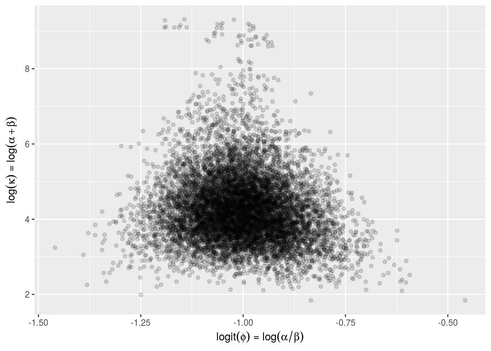
The (upside-down) funnel-like shape of the posterior is evident, with higher \(\kappa\) values corresponding to lower variance (hence the upside-downedness) and thus a narrower range of \(\phi\) values. This particular funnel-like posterior plot arises because when the population variation is large (i.e., \(\kappa\) is small), there is weak non-identifiability between the prior mean (\(\phi\)) and the mean of the random effects (\(\mathrm{mean}(\theta)\)).
The root problem with the non-centered parameterization, though, is the relation between \(\kappa\) and the \(\theta\). For example, consider the following plot of \(\theta_1\) vs. \(\kappa\).
inv_logit <- function(u) { 1 / (1 + exp(-u)); }
df_funnel <- with(ss_hier,
data.frame(x = inv_logit(theta[,1]),
y = log(kappa)))
plot_funnel <-
bda_plot(df_funnel,
x_lab = expression(paste(logit(theta[1]))),
y_lab = expression(paste(log(kappa))));
plot_funnel;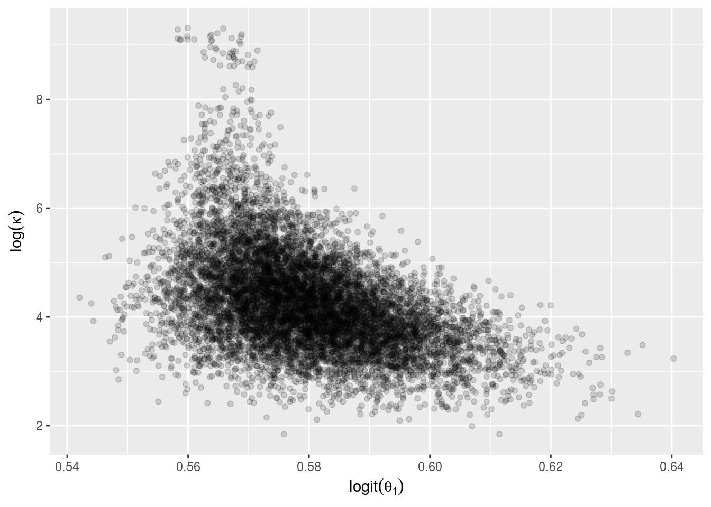
We have unconstrained both \(\theta_1\) (using \(\mathrm{logit}^{-1}\)) and \(\kappa\) (using \(\log\)), rendering both on the unconstrained scale over which sampling is actually carried out in Stan. This helps in diagnosing problems with sampling that may not be as apparent on the constrained scale. All of the transforms used by Stan for constraints are detailed in the Stan manual (Stan Development Team 2015).
It is clear here that when \(\kappa\) is smaller, there is more latitude for \(\theta_1\) to move around. This phenomenon was originally discussed by Neal (2003), is covered in the Stan manual (Stan Development Team 2015), and is analyzed fors Hamiltonian Monte Carlo by Betancourt and Girolami (2015).
Model 4: Partial Pooling (Log Odds)
The previous models all used a direct parameterization of the chance-of-success \(\theta_n \in [0,1]\). In this section, we consider an alternative parameterization in terms of the log-odds \(\alpha_n\), which are defined by the logit transform as
\[ \alpha_n = \mathrm{logit}(\theta_n) = \log \, \frac{\theta_n}{1 - \theta_n}. \]
For example, \(\theta_n = 0.25\) corresponds to odds of \(.25\) to \(.75\) (equivalently, \(1\) to \(3\)), or log-odds of \(\log .25 / .75 = -1.1\).
We will still use a binomial likelihood, only now we have logit as a so-called “link” function.
\[ p(y_n \, | \, K_n, \alpha_n) \ = \ \mathsf{Binomial}(y_n \, | \, K_n, \ \mathrm{logit}^{-1}(\alpha_n)) \]
The inverse logit function is the logistic sigmoid from which logistic regression gets its name,
\[ \mathrm{logit}^{-1}(\alpha_n) = \frac{1}{1 + \exp(-\alpha_n)} = \theta_n. \]
By construction, for any \(\alpha_n \in (-\infty, \infty)\), \(\mathrm{logit}^{-1}(\alpha_n) \in (0, 1)\); the sigmoid converts arbitrary log odds back to the chance-of-success scale. In practice, floating point calculations may underflow or overflow to 0 or 1, so in practice, we only know the result will be in \([0, 1]\).
Stan has a binomial probability function with a built-in logit link function, with which we can define the likelihood directly as
\[ p(y_n \, | \, K_n, \alpha_n) \ = \ \mathsf{BinomialLogit}(y_n \, | \, K_n, \alpha_n) \ = \ \mathsf{Binomial}(y_n \, | \, K_n, \ \mathrm{logit}^{-1}(\alpha_n)). \]
We use a simple normal hierarchical prior,
\[ p(\alpha_n \, | \, \mu, \sigma) = \mathsf{Normal}(\alpha_n \, | \, \mu, \sigma). \]
Then one level up, we use a weakly informative hyperprior for \(\mu\),
\[ p(\mu) = \mathsf{Normal}(\mu \, | \, -1, 1), \]
which places 95% of the prior probability for \(\mu\) in the interval \((-3, 1)\), which inverse-logit transforms to the interval \((0.05, 0.73)\) with a median 0.27 chance of success. An even narrower prior is actually motivated here from substantial baseball knowledge. This value should obviously be changed for other applications.
The prior scale \(\sigma > 0\) can be taken to be a truncated normal (half normal, here):
\[ p(\sigma) \ = \ 2 \, \mathsf{Normal}(\sigma \, | \, 0, 1) \ \propto \ \mathsf{Normal}(\sigma \, | \, 0, 1). \]
This is a fairly broad prior in this case, being on the log-odds scale.
One of the major advantages of casting the problem in terms of log odds is that its now easier to add in fixed effects and other multilevel effects, or even varying intercepts and slopes with multivariate priors (see Gelman and Hill (2007) for many such examples, all of which have been translated to Stan).
Centered Parameterization
We will begin with the natural centered parameterization, but we must point out ahead of time that this is not the optimal way to code this model in Stan. The centered parameterization directly follows the mathematical presentation.
parameters {
real mu; // population mean of success log-odds
real<lower=0> sigma; // population sd of success log-odds
vector[N] alpha; // success log-odds
}
model {
mu ~ normal(-1, 1); // hyperprior
sigma ~ normal(0, 1); // hyperprior
alpha ~ normal(mu, sigma); // prior (hierarchical)
y ~ binomial_logit(K, alpha); // likelihood
}The full program may be found in hier-logit-centered.stan; it is not included in this document directly (code for the other models is in an appendix at the end of this document).
fit_hier_logit_centered <-
stan("hier-logit-centered.stan", data=c("N", "K", "y"),
iter=(M / 2), chains=4,
seed=1234);Warning: There were 175 divergent transitions after warmup. Increasing adapt_delta above 0.8 may help. See
http://mc-stan.org/misc/warnings.html#divergent-transitions-after-warmupWarning: There were 4 chains where the estimated Bayesian Fraction of Missing Information was low. See
http://mc-stan.org/misc/warnings.html#bfmi-lowWarning: Examine the pairs() plot to diagnose sampling problemsss_hier_logit_centered <- extract(fit_hier_logit_centered);print(fit_hier_logit_centered,
c("sigma", "theta[1]", "theta[10]", "alpha[1]", "alpha[10]",
"mu", "sigma", "lp__"), probs=c(0.1, 0.5, 0.9));Inference for Stan model: hier-logit-centered.
4 chains, each with iter=5000; warmup=2500; thin=1;
post-warmup draws per chain=2500, total post-warmup draws=10000.
mean se_mean sd 10% 50% 90% n_eff Rhat
sigma 0.19 0.01 0.11 0.06 0.17 0.33 400 1.01
theta[1] 0.30 0.00 0.04 0.25 0.29 0.36 1303 1.00
theta[10] 0.26 0.00 0.03 0.22 0.26 0.30 3423 1.00
alpha[1] -0.87 0.01 0.21 -1.10 -0.89 -0.58 1274 1.00
alpha[10] -1.05 0.00 0.18 -1.27 -1.04 -0.83 3343 1.00
mu -1.02 0.00 0.10 -1.14 -1.02 -0.90 1552 1.00
lp__ -444.17 0.61 9.96 -455.55 -445.96 -429.30 269 1.01
Samples were drawn using NUTS(diag_e) at Tue Jun 27 21:20:39 2017.
For each parameter, n_eff is a crude measure of effective sample size,
and Rhat is the potential scale reduction factor on split chains (at
convergence, Rhat=1).With the centered parameterization and Stan’s defalt stepsize and target acceptance rate, there are many divergent transitions. Even with 10,000 posterior draws, the effective sample size for the population scale \(\sigma\) is in the low hundreds, with \(\hat{R} > 1.01\). These results might be usable, but the high \(\hat{R}\) and low effective sample size are sure signs the chains aren’t mixing well.
Warning: In cases where the chains are not mixing well, Stan’s effective sample size estimate will be much lower than that from packages such as Coda (Plummer 2006), which analyze each chain’s effective sample size separately (Gelman et al. 2013; Stan Development Team 2016). Thus it is important when comparing systems to use Stan’s more conservative effective sample size estimates; the other systems assume complete mixing in their effective sample size calculations and thus overestimate their performance when there is not good mixing.
funnel_centered_df <-
with(ss_hier_logit_centered,
data.frame(x = alpha[, 1],
y = log(sigma)));
funnel_centered <-
bda_plot(funnel_centered_df,
x_lab = expression(paste("player 1 log odds of success ", alpha[1])),
y_lab = expression(paste("log population scale ", log(sigma)))) +
ggtitle("Centered Hierarchical Funnel Plot");
funnel_centered;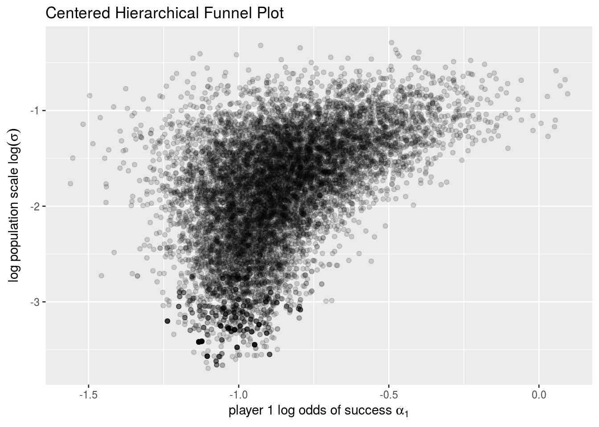
The important feature of this plot is the reduced range possible for \(\alpha_1\) as \(\sigma\) approaches zero (i.e., \(\log \sigma\) approaches negative infinity). Neal (2003) refers to the prior for the non-centered model as a “funnel”. With more data, the funnel shape becomes less pronounced and this centered parameterization is actually more efficient than the non-centered parameterization we discuss in the next section (Betancourt and Girolami 2015).
Non-Centered Parameterization
Betancourt and Girolami (2015) provide a detailed discussion of why the centered parameterization described in the previous section is challenging for MCMC methods to sample when there are small counts per group (here, the players are the groups and each has only 45 at bats observed).
To mitigate the problem, they suggest moving to a non-centered parameterization, as has also been shown to be helpful for Gibbs and random-walk Metropolis samplers (Papaspiliopoulos et al. 2003). This basically amounts to changing the parameterization over which sampling is done, taking now a standard unit normal prior for a new variable,
\[ \alpha^{\mathrm{std}}_n = \frac{\alpha_n - \mu}{\sigma}. \]
Then we can parameterize in terms of \(\alpha^{\mathrm{std}}\), which has a standard-normal distribution
\[ p(\alpha^{\mathrm{std}}_n) = \mathsf{Normal}(\alpha^{\mathrm{std}}_n \, | \, 0, 1). \]
We can then define our original \(\alpha\) as a derived quantity
\[ \alpha_n = \mu + \sigma \, \alpha^{\mathrm{std}}_n. \]
We code this implicitly in the Stan model by defining the likelihood as
\[ p(y_n \, | \, \alpha^{\mathrm{std}}_n, \mu, \sigma, K) \ = \ \mathsf{BinomialLogit}(K_n, \ \mu + \sigma \, \alpha_n). \]
This decouples the sampling distribution for \(\alpha^{\mathrm{std}}\) from \(\mu\) and \(\sigma\), greatly reducing their correlation in the posterior.
The Stan program’s parameter declaration and model directly follow the definition.
parameters {
real mu; // population mean of success log-odds
real<lower=0> sigma; // population sd of success log-odds
vector[N] alpha_std; // success log-odds
}
model {
mu ~ normal(-1, 1); // hyperprior
sigma ~ normal(0, 1); // hyperprior
alpha_std ~ normal(0, 1); // prior
y ~ binomial_logit(K, mu + sigma * alpha_std); // likelihood
}Because the parameters to the prior for \(\sigma\) are constants, the normalization for the half-prior (compared to the full prior) is constant and does not need to be included in the notation. This only works if the parameters to the density are data or constants; if they are defined as parameters or as quantities depending on parameters, then explicit truncation is required.
For the purposes of comparison, the chance of success \(\theta\) is computed as a generated quantity.
generated quantities {
vector[N] theta; // chance of success
...
for (n in 1:N)
theta[n] <- inv_logit(mu + sigma * alpha_std[n]);
...
}The full Stan program for the hierarchical logistic model is in hier-logit.stan and displayed in the appendix.
It is fit and the values are extracted as follows.
fit_hier_logit <- stan("hier-logit.stan", data=c("N", "K", "y", "K_new", "y_new"),
iter=(M / 2), chains=4,
control=list(stepsize=0.01, adapt_delta=0.99));
ss_hier_logit <- extract(fit_hier_logit);We can print as before.
print(fit_hier_logit, c("alpha_std", "theta", "mu", "sigma"), probs=c(0.1, 0.5, 0.9));Inference for Stan model: hier-logit.
4 chains, each with iter=5000; warmup=2500; thin=1;
post-warmup draws per chain=2500, total post-warmup draws=10000.
mean se_mean sd 10% 50% 90% n_eff Rhat
alpha_std[1] 0.68 0.01 0.93 -0.51 0.72 1.84 10000 1
alpha_std[2] 0.55 0.01 0.91 -0.62 0.57 1.68 10000 1
alpha_std[3] 0.45 0.01 0.92 -0.74 0.48 1.61 10000 1
alpha_std[4] 0.35 0.01 0.90 -0.80 0.37 1.48 10000 1
alpha_std[5] 0.24 0.01 0.90 -0.90 0.25 1.38 10000 1
alpha_std[6] 0.24 0.01 0.91 -0.93 0.24 1.37 10000 1
alpha_std[7] 0.12 0.01 0.89 -1.02 0.12 1.24 10000 1
alpha_std[8] 0.02 0.01 0.90 -1.13 0.02 1.16 10000 1
alpha_std[9] -0.10 0.01 0.90 -1.25 -0.10 1.04 10000 1
alpha_std[10] -0.11 0.01 0.88 -1.23 -0.12 1.02 10000 1
alpha_std[11] -0.23 0.01 0.90 -1.37 -0.23 0.92 10000 1
alpha_std[12] -0.21 0.01 0.89 -1.35 -0.21 0.93 10000 1
alpha_std[13] -0.21 0.01 0.92 -1.37 -0.23 0.96 10000 1
alpha_std[14] -0.22 0.01 0.91 -1.38 -0.24 0.94 10000 1
alpha_std[15] -0.22 0.01 0.93 -1.39 -0.23 0.96 10000 1
alpha_std[16] -0.33 0.01 0.92 -1.51 -0.34 0.85 10000 1
alpha_std[17] -0.45 0.01 0.92 -1.60 -0.47 0.72 10000 1
alpha_std[18] -0.56 0.01 0.94 -1.75 -0.60 0.64 10000 1
theta[1] 0.29 0.00 0.04 0.25 0.28 0.35 10000 1
theta[2] 0.29 0.00 0.04 0.25 0.28 0.34 10000 1
theta[3] 0.28 0.00 0.04 0.24 0.28 0.34 10000 1
theta[4] 0.28 0.00 0.04 0.24 0.28 0.33 10000 1
theta[5] 0.28 0.00 0.03 0.24 0.27 0.32 10000 1
theta[6] 0.27 0.00 0.04 0.24 0.27 0.32 10000 1
theta[7] 0.27 0.00 0.03 0.23 0.27 0.31 10000 1
theta[8] 0.27 0.00 0.03 0.23 0.26 0.31 10000 1
theta[9] 0.26 0.00 0.03 0.22 0.26 0.30 10000 1
theta[10] 0.26 0.00 0.03 0.22 0.26 0.30 10000 1
theta[11] 0.26 0.00 0.03 0.21 0.26 0.29 10000 1
theta[12] 0.26 0.00 0.03 0.22 0.26 0.29 10000 1
theta[13] 0.26 0.00 0.03 0.22 0.26 0.29 10000 1
theta[14] 0.26 0.00 0.03 0.21 0.26 0.30 10000 1
theta[15] 0.26 0.00 0.03 0.21 0.26 0.29 10000 1
theta[16] 0.25 0.00 0.03 0.21 0.25 0.29 10000 1
theta[17] 0.25 0.00 0.03 0.20 0.25 0.29 10000 1
theta[18] 0.24 0.00 0.04 0.19 0.25 0.28 10000 1
mu -1.03 0.00 0.09 -1.15 -1.02 -0.91 10000 1
sigma 0.17 0.00 0.11 0.03 0.15 0.32 4084 1
Samples were drawn using NUTS(diag_e) at Tue Jun 27 21:21:33 2017.
For each parameter, n_eff is a crude measure of effective sample size,
and Rhat is the potential scale reduction factor on split chains (at
convergence, Rhat=1).It is clear from the wide posteriors for the \(\theta_n\) that there is considerable uncertainty in the estimates of chance-of-success on an item-by-item basis. With an 80% interval of \((0.03, 0.32)\), it is clear that the data is consistent with complete pooling (i.e., \(\sigma = 0\)).
Compared to the direct beta priors with uniform and Pareto hyperpriors shown in the first example, the normal prior on log odds exerts more pull toward the population mean. The posterior means for \(\theta\) ranged from 0.22 to 0.32 with the beta prior, but only range from 0.24 to 0.29 for the normal prior. Furthermore, the posterior intervals for each values are shrunk compared to the beta prior. For example, Roberto Clemente (\(n = 1\)), has an 80% central posterior interval of \((0.25, 0.35)\) in the logistic model, whereas he had an 80% posterior interval of \((.26, .39)\) with a hierarchical beta prior.
To consider how the reparameterization is working, we plot the posterior for the mean and log scale of the hyperprior.
df_bda3_fig_5_3_logit <- with(ss_hier_logit,
data.frame(x = mu,
y = log(sigma)));
plot_bda3_fig_5_3_logit <-
bda_plot(df_bda3_fig_5_3_logit,
x_lab = expression(mu),
y_lab = expression(log(sigma)))
plot_bda3_fig_5_3_logit;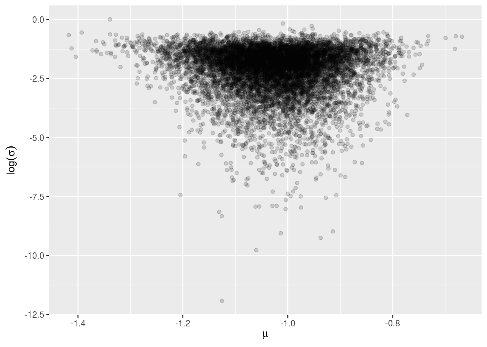
As before, we see that the prior location (\(\mu\)) and scale (\(\sigma\)) are coupled in the posterior. For comparison, here’s the scatterplot of the posterior sample values for log scale and the first transformed parameter.
df_bda3_fig_5_3_funnel <-
with(ss_hier_logit,
data.frame(x = alpha_std[, 1],
y = log(sigma)));
plot_bda3_fig_5_3_funnel <-
bda_plot(df_bda3_fig_5_3_funnel,
x_lab = expression(paste("player 1 log odds (standardized), ", alpha[1])),
y_lab = expression(paste("log population scale, ", log(sigma)))) +
ggtitle("Non-Centered Hierarchical Funnel Plot");
plot_bda3_fig_5_3_funnel;
Compared to the earlier plot of \(\log \kappa\) versus \(\mathrm{logit}(\theta_1)\) in the direct hierarcical model on chance of success, there is much less of a dependency between the variables; this can be seen because the variation is along the axes, not in a weak banana shape as in the first example. But it still has the long-tail problem as \(\sigma\) approaches zero (and \(\log \sigma\) becomes more negative).
Observed vs. Estimated Chance of Success
Figure 5.4 from (Gelman et al. 2013) plots the observed number of successes \(y_n\) for the first \(K_n\) trials versus the median and 80% intervals for the estimated chance-of-success parameters \(\theta_n\) in the posterior. The following R code reproduces a similar plot for our data.
ss_quantiles <- function(ss) {
apply(ss$theta, 2, quantile, probs = c(0.1, 0.5, 0.9));
}
theta_pool <- ss_quantiles(ss_pool);
theta_no_pool <- ss_quantiles(ss_no_pool);
theta_hier <- ss_quantiles(ss_hier);
theta_hier_logit <- ss_quantiles(ss_hier_logit);
models <- c("complete pooling", "no pooling", "partial pooling",
"partial pooling \n(log odds)")
df_plot2 <- data.frame(x = rep(y / K, 4),
y = c(theta_pool["50%",], theta_no_pool["50%",],
theta_hier["50%",], theta_hier_logit["50%",]),
ymin = c(theta_pool["10%",], theta_no_pool["10%",],
theta_hier["10%",], theta_hier_logit["10%",]),
ymax = c(theta_pool["90%",], theta_no_pool["90%",],
theta_hier["90%",], theta_hier_logit["90%",]),
model = rep(models, each = N));
pop_mean <- sum(y) / sum(K);
plot_bda3_fig_5_4 <-
ggplot(df_plot2, aes(x=x, y=y, ymin=ymin, ymax=ymax)) +
geom_hline(yintercept=pop_mean, colour="lightpink") +
geom_abline(intercept=0, slope=1, colour="skyblue") +
facet_grid(. ~ model) +
geom_errorbar(width=0.005, colour="gray60") +
geom_point(colour="gray30", size=0.75) +
coord_fixed() +
scale_x_continuous(breaks = c(0.2, 0.3, 0.4)) +
xlab(expression(paste("observed rate ", y[n] / K[n]))) +
ylab(expression(paste("chance of success ", theta[n]))) +
ggtitle("Posterior Medians and 80% intervals\n(red line: population mean; blue line: MLE)")
plot_bda3_fig_5_4;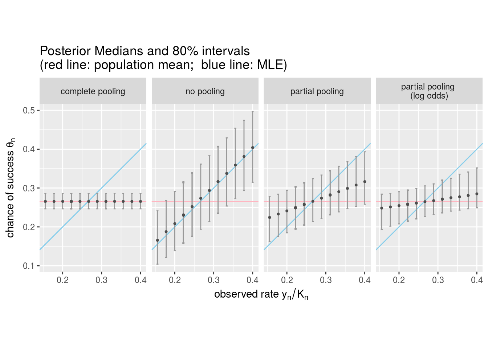
The horizontal axis is the observed rate of success, broken out by player (the overplotting is from players with the same number of successes—they all had the same number of trials in this data). The dots are the posterior medians with bars extending to cover the central 80% posterior interval. Players with the same observed rates are indistinguishable, any differences in estimates are due to MCMC error.
The horizontal red line has an intercept equal to the overall success rate,
\[ \frac{\sum_{n=1}^N y_n}{\sum_{n=1}^N K_n} \ = \ \frac{215}{810} \ = \ 0.266. \]
The overall success rate is also the posterior mode (i.e., maximum likelihood estimate) for the complete pooling model.
The diagonal blue line has intercept 0 and slope 1. Estimates falling on this line make up the maximum likelihood estimates for the no-pooling model.
The choice of likelihood function and parameterization (a single parameter or one parameter per item) has a fairly large impact here on the estimated chance of success for each item. This is true even in non-Bayesian settings—the points are very close to where the maximum likelihood estimates will be and these vary quite dramatically between the complete pooling and no pooling extremes. It is important to keep in mind that it’s not just the choice of prior that contributes to the “subjective” modeling of a data set; the choice of likelihood is equally if not more sensitive to modeling assumptions. It is also worth noting here that the effects of weak priors of the sort we have will be reduced in cases where there is more data (see the exercises).
In the no pooling and complete pooling cases, the posterior can be calculated analytically and shown to be a beta distribution. The median of a beta distribution (plotted points in the complete pooling and no pooling cases) is greater than the mode of a beta distribution (the blue line, corresponding to the MLE); this assumes \(\alpha, \beta > 1\) (see the Wikipedia article on the beta distribution for an explanation). The reason this is not evident in the complete pooling case is that there is far more data, and as \(N \rightarrow \infty\), the mean, median, and mode of the beta distribution converge to the same value.
Plotting the transformed \(\theta\) values in the logit-based model, there is a clear skew in the posteriors for each parameter away from the population mean. Overall, the plot makes the amount of pooling toward the prior evident.
Posterior Predictive Distribution
After we have fit a model using some “training” data, we are usually interested in the predictions of the fitted model for new data, which we can use to
make predictions for new data points; e.g., predict how many hits will Roberto Clemente get in the rest of the season,
evaluate predictions against observed future data; e.g., how well did we predict how many hits Roberto Clemente actually got in the rest of the season, and
generate new simulated data to validate our model fits.
With full Bayesian inference, we do not make a point estimate of parameters and use those prediction—we instead use an average of predictions weighted by the posterior.
Given data \(y\) and a model with parameters \(\theta\), the posterior predictive distribution for new data \(\tilde{y}\) is defined by
\[ p(\tilde{y} \, | \, y) \ = \ \int_{\Theta} p(\tilde{y} \, | \, \theta) \ p(\theta \, | \, y) \ \mathrm{d}\theta, \]
where \(\Theta\) is the support of the parameters \(\theta\). What an integral of this form says is that \(p(\tilde{y} \, | \, y)\) is defined as a weighted average over the legal parameter values \(\theta \in \Theta\) of the likelihood function \(p(\tilde{y} \, | \, \theta)\), with weights given by the posterior, \(p(\theta \, | \, y)\). While we do not want to get sidetracked with the notational and mathematical subtleties of expectations here, the posterior predictive density reduces to the expectation of \(p(\tilde{y} \, | \, \theta)\) conditioned on \(y\).
Evaluating Held-Out Data Predictions
Because the posterior predictive density is formulated as an expectation over the posterior, it is possible to compute via MCMC. With \(M\) draws \(\theta^{(m)}\) from the posterior \(p(\theta \, | \, y)\), the posterior predicitve log density for new data \(y^{\mathrm{new}}\) is given by
\[ p(y^{\mathrm{new}} \, | \, y) \ \approx \ \log \frac{1}{M} \, \sum_{m=1}^M \ p\left( y^{\mathrm{new}} \, | \, \theta^{(m)} \right). \]
In practice, this requires care to prevent underflow in floating point calculations; a robust calculation on the log scale is provided below.
Simulating Replicated Data
It is also straightforward to use forward simulation from the data sampling distribution \(p(y \, | \, \theta)\) to generate replicated data \(y^{\mathrm{rep}}\) according to the posterior predictive distribution. (Recall that \(p(y \, | \, \theta)\) is called the sampling distribution when \(\theta\) is fixed and the likelihood when \(y\) is fixed.)
With \(M\) draws \(\theta^{(m)}\) from the posterior \(p(\theta \, | \, y)\), replicated data can be simulated by drawing a sequence of \(M\) simulations according \(y^{\mathrm{rep} \ (m)}\) with each drawn according to distribution \(p(y \, | \, \theta^{(m)})\). This latter random variate generation can usually be done efficiently (both computationally and statistically) by means of forward simulation from the sampling distribution; we provide an example below.
Prediction for New Trials
Efron and Morris’s (1975) baseball data includes not only the observed hit rate in the initial 45 at bats, but also includes the data for how the player did for the rest of the season. The question arises as to how well these models predict a player’s performance for the rest of the season based on their initial 45 at bats.
After evaluating posterior predictive densities for new data, we consider how well the model actually fit the data with which it is estimated.
Calibration
A well calibrated statistical model is one in which the uncertainy in the predictions matches the uncertainty in further data. That is, if we estimate posterior 50% intervals for predictions on new data (here, number of hits in the rest of the season for each player), roughly 50% of the new data should fall in its predicted 50% interval. If the model is true in the sense of correctly describing the generative process of the data, then Bayesian inference is guaranteed to be well calibrated. Given that our models are rarely correct in this deep sense, in practice we are concerned with testing their calibration on quantities of interest.
Why Evaluate with the Predictive Posterior?
The predictive posterior density directly measures the probability of seeing the new data. The higher the probability assigned to the new data, the better job the model has done at predicting the outcome. In the limit, an ideal model would perfectly predict the new outcome with no uncertainty (probability of 1 for a discrete outcome or a delta function at the true value for the density in a continuous outcome). This notion is related to the notion of sharpness discussed in the previous section, because if the new observations have higher predictive densities, they’re probably within narrower posterior intervals (Gneiting et al. 2007).
Computing the Log Predictive Posterior Density
The log of posterior predicitve density is defined in the obvious way as
\[ \log p(\tilde{y} \, | \, y) = \log \int_{\Theta} p(\tilde{y} \, | \, \theta) \ p(\theta \, | \, y) \ \mathrm{d}\theta. \]
This is not a posterior expectation, but rather the log of a posterior expectation. In particular, it should not be confused with the posterior expectation of the log predictive density, which is given by
\[ \int_{\Theta} \left( \log p(\tilde{y} \, | \, \theta) \right) \ p(\theta \, | \, y) \ \mathrm{d}\theta. \]
Although this is easy to compute in Stan in a stable fashion, it does not produce the same answer (as we show below).
Because \(-\log(u)\) is convex, a little wrangling with Jensen’s inequality shows that the expectation of the log is less than or equal to the log of the expectation,
\[ \log \int_{\Theta} p(\tilde{y} \, | \, \theta) \ p(\theta \, | \, y) \ \mathrm{d}\theta \ \leq \ \int_{\Theta} \left( \, \log p(\tilde{y} \, | \, \theta) \, \right) \ p(\theta \, | \, y) \ \mathrm{d}\theta. \]
We’ll compute both expectations and demonstrate Jensen’s inequality in our running example.
The integer variables K_new[n] and y_new[n] declared in the data block hold the number of at bats (trials) and the number of hits (successes) for player (item) n. To code the evaluation of the held out data in Stan, we declare a generated quantities variable (log_p_news) to hold the log density of each data point and define it in the obvious way.
generated quantities {
...
real log_p_new; // posterior predictive log density remaining trials
vector[N] log_p_news; // posterior predictive log density for item
...
for (n in 1:N)
log_p_news[n] <- binomial_log(y_new[n], K_new[n], theta[n]);
log_p_new <- sum(log_p_news);
...
}The posterior mean for log_p_new will give us
\[ \int_{\Theta} \left( \log p(\tilde{y} \, | \, \theta) \right) \ p(\theta \, | \, y) \ \mathrm{d}\theta \ \approx \ \frac{1}{M} \, \sum_{m=1}^M \log p(y^{\mathrm{new}} \, | \, \theta^{(m)}). \]
This calculation is included in all four of the models we have previously fit and can be displayed directly as follows as the posterior mean of log_p_new.
print(sprintf("%10s %16s", "MODEL", "VALUE"), quote = FALSE);[1] MODEL VALUEprint(sprintf("%10s %16.0f", "pool", mean(ss_pool$log_p_new)), quote=FALSE);[1] pool -81print(sprintf("%10s %16.0f", "no pool", mean(ss_no_pool$log_p_new)), quote=FALSE);[1] no pool -217print(sprintf("%10s %16.0f", "hier", mean(ss_hier$log_p_new)), quote=FALSE);[1] hier -125print(sprintf("%10s %16.0f", "hier logit", mean(ss_hier_logit$log_p_new)), quote=FALSE);[1] hier logit -102From a predictive standpoint, the models are ranked by the amount of pooling they do, with complete pooling being the best, and no pooling being the worst predictively. All of these models do predictions by averaging over their posteriors, with the amount of posterior uncertainty also being ranked in reverse order of the amount of pooling they do.
Calculating posterior log density
The straight path to calculate this would be to define a generated quantity \(p(y^{\mathrm{new}} \, | y)\), look at the posterior mean computed by Stan, and takes its log. That is,
\[ \log p(y^{\mathrm{new}} \, | \, y) \ \approx \ \log \frac{1}{M} \, \sum_{m=1}^M p(y^{\mathrm{new}} \, | \, \theta^{(m)}). \]
Unfortunately, this won’t work in most cases because when we try to compute \(p(y^{\mathrm{new}} \, | \, \theta^{(m)})\) directly, it is prone to underflow. For example, 2000 outcomes \(y^{\mathrm{new}}_n\), each with likelihood 0.5 for \(\theta^{(m)}\), will underflow, because \(0.5^{2000}\) is smaller than the smallest positive number that a computer can represent using standard double-precision floating point (used by Stan, R, etc.).
In contrast, if we work on the log scale, \(\log p(y^{\mathrm{new}} \, | \, y)\) will not underflow. It’s a sum of a bunch of terms of order 1. But we already saw we can’t just average the log to get the log of the average.
To avoid underflow, we’re going to use the log-sum-of-exponentials trick, which begins by noting the obvious,
\[ \log \frac{1}{M} \, \sum_{m=1}^M \ p(y^{\mathrm{new}} \, | \, \theta^{(m)}). \ = \ \log \frac{1}{M} \, \sum_{m=1}^M \ \exp \left( \log p(y^{\mathrm{new}} \, | \, \theta^{(m)}) \right). \]
We’ll then write that last expression as
\[ -\log M + \mathrm{log\_sum\_exp \, }_{m=1}^M \ \log p(y^{\mathrm{new}} \, | \, \theta^{(m)}) \]
We can compute \(\mathrm{log\_sum\_exp}\) stably by subtracting the max value. Suppose \(u = u_1, \ldots, u_M\), and \(\max(u)\) is the largest \(u_m\). We can calculate
\[ \mathrm{log\_sum\_exp \, }_{m=1}^M \ u_m \ = \ \log \sum_{m=1}^M \exp(u_m) \ = \ \max(u) + \log \sum_{m=1}^M \exp(u_m - \max(u)). \]
Because \(u_m - \max(u) \leq 0\), the exponentiations cannot overflow. They may underflow to zero, but this will not lose precision because of the leading \(\max(u)\) term; the only way underflow can arise is if \(u_m - \max(u)\) is very small, meaning that it won’t add significant digits to \(\max(u)\) if it hadn’t underflowed.
We can implement \(\mathrm{log\_sum\_exp}\) in R as follows.
log_sum_exp <- function(u) {
max_u <- max(u);
a <- 0;
for (n in 1:length(u)) {
a <- a + exp(u[n] - max_u);
}
return(max_u + log(a));
}and then use it to print the log posterior predictive densities for our fit.
print_new_lp <- function(name, ss) {
lp <- -log(M) + log_sum_exp(ss$log_p_new);
print(sprintf("%25s %5.1f", name, lp), quote=FALSE);
}
print_new_lp("complete pooling", ss_pool); [1] complete pooling -74.8print_new_lp("no pooling", ss_no_pool); [1] no pooling -99.7print_new_lp("partial pooling", ss_hier); [1] partial pooling -74.4print_new_lp("partial pooling (logit)", ss_hier_logit); [1] partial pooling (logit) -74.1Now the ranking is different! As expected, the values here are lower than the expectation of the log density due to Jensen’s inequality. The hierarchical logit model appears to be making slightly better predictions than the full pooling model, which in turn is making slightly better predictions than the basic hierarchical model.
Predicting New Observations
We showed above that it is straightforward to generate draws from the posterior predictive distribution. With this capability, we can either generate predictions for new data or we can replicate the data we already have.
We let \(z_n\) be the number of successes for item \(n\) in \(K^{\mathrm{new}}_n\) further trials.
The posterior predictions can be declared in Stan as generated quantities. Their values are determined by calling the binomial pseudorandom number generator, which corresponds to the binomial sampling distribution (likelihood) in this case.
generated quantities {
...
int<lower=0> z[N]; // posterior prediction remaining trials
...
for (n in 1:N)
z[n] <- binomial_rng(K_new[n], theta[n]);
...
}This formulation makes it clear that there are two sources of uncertainty in our predictions, the first being the uncertainty in \(\theta\) in the posterior \(p(\theta \, | \, y)\) and the second being the uncertainty due to the likelihood \(p(\tilde{y} \, | \, \theta)\).
It might seem tempting to eliminate that second source of uncertainty and set \(z_n^{(m)}\) to its expectation, \(\theta_n^{(m)} \, K^{\mathrm{new}}\), at each iteration rather than simulating a new value. Or it might seem tempting to remove the first source of uncertainty and use the posterior mean (or median or mode or …) rather than draws fro the posterior. Either way, the resulting values would suffice for estimating the posterior mean, but would not capture the uncertainty in the prediction for \(y^{\mathrm{new}}_n\) and would thus not be useful in estimating predictive standard deviations or quantiles or as the basis for decision making under uncertainty. In other words, the predictions would not be properly calibrated (in a sense we define below).
The number of remaining at-bats \(K^{\mathrm{new}}\) was printed out in the original table along with the actual number of hits.
print(fit_pool, c("z"), probs=c(0.1, 0.5, 0.9), digits=0);Inference for Stan model: pool.
4 chains, each with iter=5000; warmup=2500; thin=1;
post-warmup draws per chain=2500, total post-warmup draws=10000.
mean se_mean sd 10% 50% 90% n_eff Rhat
z[1] 97 0 10 85 97 110 5929 1
z[2] 113 0 11 99 113 128 6726 1
z[3] 138 0 13 122 138 155 6011 1
z[4] 73 0 8 62 73 84 6824 1
z[5] 111 0 11 97 111 125 6544 1
z[6] 124 0 12 108 124 139 6078 1
z[7] 156 0 14 138 155 174 5664 1
z[8] 37 0 6 30 37 44 7864 1
z[9] 136 0 13 120 136 152 6280 1
z[10] 53 0 7 44 53 62 7619 1
z[11] 143 0 13 126 143 160 6037 1
z[12] 49 0 7 41 49 58 7911 1
z[13] 116 0 11 101 115 130 6213 1
z[14] 74 0 9 63 73 85 7027 1
z[15] 157 0 14 139 157 175 5728 1
z[16] 148 0 14 131 148 165 5623 1
z[17] 108 0 11 94 108 123 6514 1
z[18] 19 0 4 14 18 23 8384 1
Samples were drawn using NUTS(diag_e) at Tue Jun 27 21:17:42 2017.
For each parameter, n_eff is a crude measure of effective sample size,
and Rhat is the potential scale reduction factor on split chains (at
convergence, Rhat=1).Translating the posterior number of hits into a season batting average, \(\frac{y_n + z_n}{K_n + K^{\mathrm{new}}_n}\), we get an 80% posterior interval of
\[ \left( \frac{18 + 93}{45 + 367}, \frac{18 + 147}{45 + 367} \right) \ = \ (0.269, 0.400). \]
for Roberto Clemente in the basic hierarchical model. Part of our uncertainty here is due to our uncertainty in Clemente’s underlying chance of success, and part of our uncertainty is due to there being 367 remaining trials (at bats) modeled as binomial. In the remaining at bats for the season, Clemente’s success rate (batting average) was \(127/367 = 0.35\).
The posterior produced by the model for the number of hits for the rest of the season is overdispersed compared to a simple binomial model based on a point estimate. For example, if we take the partially pooled posterior mean estimate of 0.32 for Roberto Clemente’s ability (and thus remove the first source of uncertainty, the posterior uncertainty in his chance of success), the prediction for number of hits based on the point estimate would be \(\mathrm{Binomial}(K^{\mathrm{new}}_1, 0.32)\), which we know analytically has a standard deviation of \(\sqrt{n \, \theta_n \, (1 - \theta_n)} = 8.9\), which is quite a bit lower than the posterior standard deviation of 21 in the hierarchical model for \(z_1\).
For each model, the following plot shows each player’s posterior predictive 50% interval for predicted batting average (success rate) in his remaining at bats (trials); the observed success rate in the remainder of the season is shown as a blue dot.
y_new_25_pool <- c(NA, N);
y_new_25_no_pool <- c(NA, N);
y_new_25_hier <- c(NA, N);
y_new_25_hier_logit <- c(NA, N);
y_new_75_pool <- c(NA, N);
y_new_75_no_pool <- c(NA, N);
y_new_75_hier <- c(NA, N);
y_new_75_hier_logit <- c(NA, N);
for (n in 1:N) {
y_new_25_pool[n] <- quantile(ss_pool$z[,n], 0.25)[[1]];
y_new_25_no_pool[n] <- quantile(ss_no_pool$z[,n], 0.25)[[1]];
y_new_25_hier[n] <- quantile(ss_hier$z[,n], 0.25)[[1]];
y_new_25_hier_logit[n] <- quantile(ss_hier_logit$z[,n], 0.25)[[1]];
y_new_75_pool[n] <- quantile(ss_pool$z[,n], 0.75)[[1]];
y_new_75_no_pool[n] <- quantile(ss_no_pool$z[,n], 0.75)[[1]];
y_new_75_hier[n] <- quantile(ss_hier$z[,n], 0.75)[[1]];
y_new_75_hier_logit[n] <- quantile(ss_hier_logit$z[,n], 0.75)[[1]];
}
y_new_25_pool <- y_new_25_pool / K_new;
y_new_25_no_pool <- y_new_25_no_pool / K_new;
y_new_25_hier <- y_new_25_hier / K_new;
y_new_25_hier_logit <- y_new_25_hier_logit / K_new;
y_new_75_pool <- y_new_75_pool / K_new;
y_new_75_no_pool <- y_new_75_no_pool / K_new;
y_new_75_hier <- y_new_75_hier / K_new;
y_new_75_hier_logit <- y_new_75_hier_logit / K_new;
df_post_pred <- data.frame(x = rep(1:N, 4),
y = rep(y_new / K_new, 4),
model = c(rep("complete pooling", N),
rep("no pooling", N),
rep("partial pooling", N),
rep("partial pooling (log odds)", N)));
plot_post_pred <-
ggplot(df_post_pred, aes(x=x, y=y)) +
geom_point(colour="darkblue", size=1) +
geom_errorbar(aes(ymin = c(y_new_25_pool, y_new_25_no_pool,
y_new_25_hier, y_new_25_hier_logit),
ymax = c(y_new_75_pool, y_new_75_no_pool,
y_new_75_hier, y_new_75_hier_logit)),
width=0.5, colour="gray60") +
facet_grid(. ~ model) +
scale_x_continuous(breaks=c()) +
xlab("player ID") +
ylab("batting average") +
ggtitle(expression(
atop("Posterior Predictions for Batting Average in Remainder of Season",
atop("50% posterior predictive intervals (gray bars); observed (blue dots)", ""))));
plot_post_pred;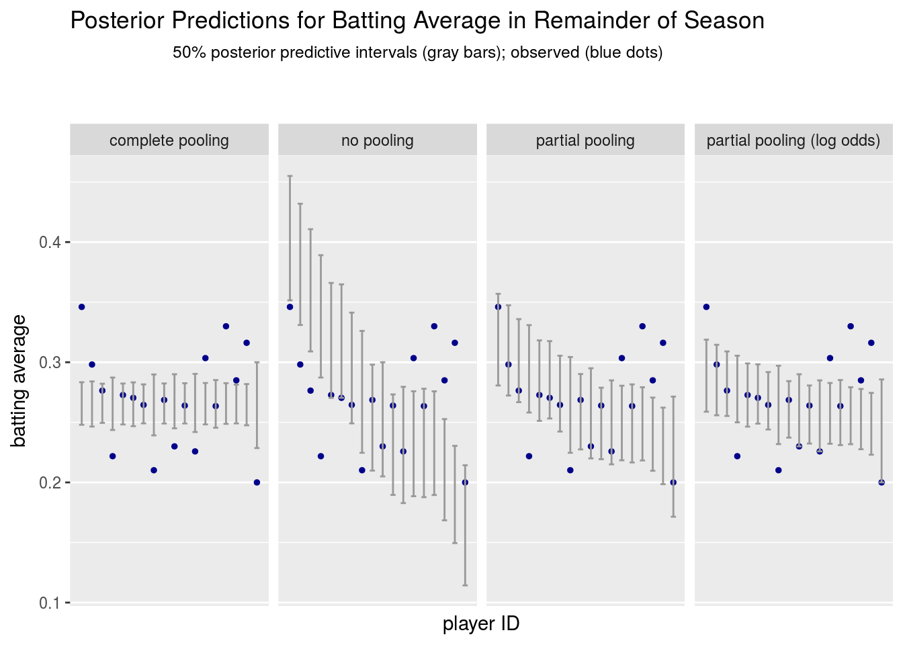
We choose 50% posterior intervals as they are a good single point for checking calibration (see the exercises). Rather than plotting the number of hits on the vertical axis, we have standardized all the predictions and outcomes to a success rate (aka batting average, in the baseball case). Because each item (player) has a different number of subsequent trials (at bats), the posterior intervals are relatively wider or narrower within the plots for each model (more trials imply narrower intervals for the average). Because each item had the same number of initial observed trials, this variation is primarily due to the uncertainty from the binomial model of outcomes.
Calibration
With 50% intervals, we expect half of our estimates to lie outside their intervals in a well-calibrated model. If fewer than the expected number of outcomes lie in their estimated posterior intervals, we have reason to believe the model is not well calibrated—its posterior intervals are too narrow. This is also true if too many outcomes lie in their estimated posterior intervals—in this case the intervals are too broad. Of course, there is variation in the tests as the number of items lying in their intervals is itself a random variable (see the exercises), so in practice we are only looking for extreme values as indicators of miscalibration.
Each of the models other than the complete pooling model appears to be reasonably well calibrated, and even the calibration for the complete pooling model is not bad (the variation in chance-of-success among players has low enough variance that the complete pooling model cannot be rejected as a possibility with only the amount of data we used here).
Data Splitting and Cross-Validation
Not all data sets come with a convenient train/test (observe/predict) split. One obvious way around that problem is to break them yourself if the data’s exchangeable, as we are assuming it is for this repeated trial data (that is, each trial’s chance of success is the same). We can even do the splits into sizes that we care about.
This process can be repeated, leading to cross-validation. A typical approach is to divide the data up into ten sections and for each section, estimate based on the remaining nine sections and then evaluate on the given section. Each section is referred to as a “fold” and dividing into \(N\) subsets is known as \(N\)-fold cross-validation. In the limit, we can leave out one observation and train on the rest; this is known as “leave-one-out cross-validation” (LOO). See (Gelman et al. 2013) for a discussion of LOO and its relation to (Bayesian) information criteria such as WAIC.
Estimating Event Probabilities
The 80% interval in the partial pooling model coincidentally shows us that our model estimates a roughly 10% chance of Roberto Clemente batting 0.400 or better for the season based on batting 0.400 in his first 45 at bats. Not great, but non-trivial. Rather than fishing for the right quantile and hoping to get lucky, we can write a model to directly estimate event probabilities, such as Robert Clemente’s batting average is 0.400 or better for the season.
Event probabilities are defined as expectations of indicator functions over parameters and data. For example, the probability of player \(n\)’s batting average being 0.400 or better conditioned on the data \(y\) is defined by the conditional event probability
\[ \mathrm{Pr}\left[ \frac{(y_n + z_n)}{(45 + K^{\mathrm{new}}_n)} \geq 0.400 \, \Big| \, y \right] \ = \ \int_{\Theta} \mathrm{I}\left[\frac{(y_n + z_n)}{(45 + K^{\mathrm{new}}_n)} \geq 0.400\right] \ p(z_n \, | \, \theta_n, K^{\mathrm{new}}_n) \ p(\theta \, | \, y, K) \ \mathrm{d}\theta. \]
The indicator function \(\mathrm{I}[c]\) evaluates to 1 if the condition \(c\) is true and 0 if it is false. Because it is just another expectation with respect to the posterior, we can calculate this event probability using MCMC as
\[ \mathrm{Pr}\left[\frac{(y_n + z_n)}{(45 + K^{\mathrm{new}}_n)} \geq 0.400 \, \Big| \, y \right] \ \approx \ \frac{1}{M} \, \sum_{m=1}^M \mathrm{I}\left[\frac{(y_n + z_n^{(m)})}{(45 + K^{\mathrm{new}}_n)} \geq 0.400\right]. \]
This event is about the season batting average being greater than 0.400. What if we care about ability (chance of success), not batting average (success rate) for the rest of the season? Then we would ask the question of whether \(\mathrm{Pr}[\theta_n > 0.4]\). This is defined as a weighted average over the prior and computed via MCMC as the previous case.
\[ \mathrm{Pr}\left[\theta_n \geq 0.400 \, | \, y \right] \ = \ \int_{\Theta} \mathrm{I}\left[\theta_n \geq 0.400\right] \ p(\theta \, | \, y, K) \ \mathrm{d}\theta \ \approx \ \frac{1}{M} \, \sum_{m=1}^M \mathrm{I}[\theta_n^{(m)} \geq 0.400]. \]
In Stan, we just declare and define the indicators directly in the generated quantities block.
generated quantities {
...
int<lower=0, upper=1> some_ability_gt_350; // Pr[some theta > 0.35]
int<lower=0, upper=1> avg_gt_400[N]; // Pr[season avg of n] >= 0.400
int<lower=0, upper=1> ability_gt_400[N]; // Pr[chance-of-success of n] >= 0.400
...
some_ability_gt_350 <- (max(theta) > 0.35);
for (n in 1:N)
avg_gt_400[n] <- (((y[n] + z[n]) / (0.0 + K[n] + K_new[n])) > 0.400);
for (n in 1:N)
ability_gt_400[n] <- (theta[n] > 0.400);
...
}The indicator function is not explicitly specified because Stan’s boolean operator greater-than returns either 0 or 1. The only trick to this code is the 0.0 + … in the fraction computation, the purpose of which is to cast the value to real to prevent integer division from rounding.
As usual, the expectations appear as the posterior means in the summary. We can summarize for all four models again. Only the event indicator variables are printed—the parameter estimates will be the same as before.
pars_to_print <- c("some_ability_gt_350",
"avg_gt_400[1]","avg_gt_400[5]", "avg_gt_400[10]",
"ability_gt_400[1]", "ability_gt_400[5]", "ability_gt_400[10]");
print(fit_pool, pars=pars_to_print, probs=c());Inference for Stan model: pool.
4 chains, each with iter=5000; warmup=2500; thin=1;
post-warmup draws per chain=2500, total post-warmup draws=10000.
mean se_mean sd n_eff Rhat
some_ability_gt_350 0 0 0 10000 NaN
avg_gt_400[1] 0 0 0 10000 NaN
avg_gt_400[5] 0 0 0 10000 NaN
avg_gt_400[10] 0 0 0 10000 NaN
ability_gt_400[1] 0 0 0 10000 NaN
ability_gt_400[5] 0 0 0 10000 NaN
ability_gt_400[10] 0 0 0 10000 NaN
Samples were drawn using NUTS(diag_e) at Tue Jun 27 21:17:42 2017.
For each parameter, n_eff is a crude measure of effective sample size,
and Rhat is the potential scale reduction factor on split chains (at
convergence, Rhat=1).print(fit_no_pool, pars=pars_to_print, probs=c());Inference for Stan model: no-pool.
4 chains, each with iter=5000; warmup=2500; thin=1;
post-warmup draws per chain=2500, total post-warmup draws=10000.
mean se_mean sd n_eff Rhat
some_ability_gt_350 1.00 0 0.06 10000 1
avg_gt_400[1] 0.52 0 0.50 10000 1
avg_gt_400[5] 0.10 0 0.30 10000 1
avg_gt_400[10] 0.01 0 0.10 8072 1
ability_gt_400[1] 0.52 0 0.50 10000 1
ability_gt_400[5] 0.12 0 0.32 10000 1
ability_gt_400[10] 0.02 0 0.13 7605 1
Samples were drawn using NUTS(diag_e) at Tue Jun 27 21:18:34 2017.
For each parameter, n_eff is a crude measure of effective sample size,
and Rhat is the potential scale reduction factor on split chains (at
convergence, Rhat=1).print(fit_hier, pars=pars_to_print, probs=c());Inference for Stan model: hier.
4 chains, each with iter=5000; warmup=2500; thin=1;
post-warmup draws per chain=2500, total post-warmup draws=10000.
mean se_mean sd n_eff Rhat
some_ability_gt_350 0.59 0.01 0.49 2134 1
avg_gt_400[1] 0.10 0.00 0.30 6589 1
avg_gt_400[5] 0.01 0.00 0.11 8409 1
avg_gt_400[10] 0.00 0.00 0.03 10000 1
ability_gt_400[1] 0.08 0.00 0.27 6855 1
ability_gt_400[5] 0.01 0.00 0.12 7720 1
ability_gt_400[10] 0.00 0.00 0.05 10000 1
Samples were drawn using NUTS(diag_e) at Tue Jun 27 21:19:43 2017.
For each parameter, n_eff is a crude measure of effective sample size,
and Rhat is the potential scale reduction factor on split chains (at
convergence, Rhat=1).print(fit_hier_logit, pars=pars_to_print, probs=c());Inference for Stan model: hier-logit.
4 chains, each with iter=5000; warmup=2500; thin=1;
post-warmup draws per chain=2500, total post-warmup draws=10000.
mean se_mean sd n_eff Rhat
some_ability_gt_350 0.26 0 0.44 7925 1
avg_gt_400[1] 0.04 0 0.19 8929 1
avg_gt_400[5] 0.00 0 0.06 10000 1
avg_gt_400[10] 0.00 0 0.01 10000 1
ability_gt_400[1] 0.03 0 0.16 8838 1
ability_gt_400[5] 0.00 0 0.06 10000 1
ability_gt_400[10] 0.00 0 0.02 10000 1
Samples were drawn using NUTS(diag_e) at Tue Jun 27 21:21:33 2017.
For each parameter, n_eff is a crude measure of effective sample size,
and Rhat is the potential scale reduction factor on split chains (at
convergence, Rhat=1).The standard deviation and quantiles are not useful here and the quantiles are suppressed through an empty probs argument to print(); we do want to see a reasonable effective sample size estimate and no evidence of non-convergence in the form for \(\hat{R}\) values much greater than 1. The NaN values in the \(\hat{R}\) column arise when every posterior draw is the same; there is zero sample variance, and so \(\hat{R}\) is not defined.
These results show that the probability of batting 0.400 or better for the season is a different question than asking if the player’s ability is 0.400 or better; for example, with respect to the basic partial pooling model, there is roughly an estimated 10% chance of Roberto Clemente (\(n = 1\)) batting 0.400 or better for the season, but only an estimated 8% chance that he has ability greater than 0.400. This is again due to there being two sources of uncertainty, that from the estimate of the chance of success in the posterior and that from the remaining binary trials.
Multiple Comparisons
We snuck in a “multiple comparison” event in the last section, namely whether there was some player with an a chance of success for hits of .350 or greater.
With traditional significance testing over multiple trials, it is common to adjust for falsely rejecting the null hypothesis (a so-called Type I error) by inflating the conventional (and arguably far too low) 5% target for reporting “significance.”
For example, suppose we have our 18 players with ability parameters \(\theta_n\) and we have \(N\) null hypotheses of the form \(H_0^n: \theta_n < 0.350\). Now suppose we evaluate each of these 18 hypotheses independently at the conventional \(p = 0.05\) significance level, giving each a 5% chance of rejecting the null hypothesis in error. When we run all 18 hypothesis tests, the overall chance of falsely rejecting at least one of the null hypotheses is a whopping \(1 - (1 - 0.05)^{18} = 0.60\).
The traditional solution to this problem is to apply a Bonferroni adjustment to control the false rejection rate; the typical adjustment is to divide the \(p\)-value by the number of hypothesis tests in the “family” (that is, the collective test being done). Here that sets the rate to \(p = 0.05/18\), or approximately \(p = 0.003\), and results in a slightly less than 5% chance of falsely rejecting a null hypothesis in error.
Although the Bonferroni correction does reduce the overall chance of falsely rejecting a null hypothesis, it also reduces the statistical power of the test to the same degree. This means that many null hypotheses will fail to be rejected in error.
Rather than doing classical multiple comparison adjustments to adjust for false-discovery rate, such as a Bonferroni correction, Gelman et al. (2012) suggest using a hierarchical model to perform partial pooling instead. As already shown, hierarchical models partially pool the data, which pulls estimates toward the population mean with a strength determined by the amount of observed variation in the population (see also Figure 2 of (Gelman et al. 2012)). This automatically reduces the false-discovery rate, though not in a way that is intrinsically calibrated to false discovery, which is good, because reducing the overall false discovery rate in and of itself reduces the true discovery rate at the same time.
The generated quantity some_ability_gt_350 will be set to 1 if the maximum ability estimate in \(\theta\) is greater than 0.35. And thus the posterior mean of this generated quantity will be the event probability
\[ \mathrm{Pr}[\mathrm{max}(\theta) > 0.350] \ = \ \int_{\Theta} \mathrm{I}[\mathrm{max}(\theta) > 0.35] \ p(\theta \, | \, y, K) \ \mathrm{d}\theta \ \approx \ \frac{1}{M} \, \sum_{m=1}^M \ \mathrm{I}[\mathrm{max}(\theta^{(m)}) > 0.35] \]
where \(\theta^{(m)}\) is the sequence of posterior draws for the ability parameter vector. Stan reports this value as the posterior mean of the generated quantity some_ability_gt_350, which takes on the value \(\mathrm{I}[\mathrm{max}(\theta^{(m)}) > 0.35]\) in each iteration.
The probability estimate of there being a player with an ability (chance of success) greater than 0.350 is roughly 0% in the complete pooling model, 25% in the hierarchical logit model, 62% in the basic hierarchical model, and 100% in the no pooling model. Neither of the partially pooled estimates would be considered significant at conventional p=0.05 thresholds. One way to get a handle on what’s going on is to inspect the posterior 80% intervals for chance-of-success estimates in the first graph above.
Ranking
In addition to multiple comparisons, we can use the simultaneous estimation of the ability parameters to rank the items. In this section, we rank ballplayers by (estimated) chance of success (i.e., batting ability).
To implement ranking in Stan, we define a generated quantity rnkto hold the ranks; that is, rnk[2] is the rank (a value ranging from \(1\) to \(N\)) of the second player. First, we define a local variable dsc, and sort it into descending order.
generated quantities {
...
int<lower=1, upper=N> rnk[N]; // rnk[n] is rank of player n
...
{
int dsc[N];
dsc <- sort_indices_desc(theta);
for (n in 1:N)
rnk[dsc[n]] <- n;
}
...
}After the call to sort_indices_desc, dsc[n] holds the index of the \(n\)-th best item. For example, if rnk[2] == 5, so that player with identifier 2 is ranked 5th, then dsc[5] == 2, because the fifth rank player is the player with identifier 2. The final loop just puts the ranks into their proper place in the rnk array.
In this example, the nested brackets produce a scope in which the integer array variable dsc can be declared as a local variable to hold the sorted indices. Unlike variables declared at the top of the generated quantities block, local variables are not saved every iteration.
Of course, ranking players by ability makes no sense for the complete pooling model, where every player is assumed to have the same ability.
We can print just the ranks and the 80% central interval for the basic pooling model.
print(fit_hier, "rnk", probs=c(0.1, 0.5, 0.9));Inference for Stan model: hier.
4 chains, each with iter=5000; warmup=2500; thin=1;
post-warmup draws per chain=2500, total post-warmup draws=10000.
mean se_mean sd 10% 50% 90% n_eff Rhat
rnk[1] 4.46 0.04 3.75 1 3 10 10000 1
rnk[2] 5.11 0.04 4.00 1 4 11 10000 1
rnk[3] 5.82 0.04 4.13 1 5 12 10000 1
rnk[4] 6.63 0.04 4.40 2 6 13 10000 1
rnk[5] 7.52 0.04 4.49 2 7 14 10000 1
rnk[6] 7.47 0.04 4.49 2 7 14 10000 1
rnk[7] 8.45 0.05 4.62 2 8 15 10000 1
rnk[8] 9.35 0.05 4.63 3 9 16 10000 1
rnk[9] 10.26 0.05 4.69 4 10 17 10000 1
rnk[10] 10.34 0.05 4.66 4 11 17 10000 1
rnk[11] 11.27 0.05 4.58 5 12 17 10000 1
rnk[12] 11.29 0.05 4.58 5 12 17 10000 1
rnk[13] 11.34 0.05 4.58 5 12 17 10000 1
rnk[14] 11.23 0.05 4.56 5 12 17 10000 1
rnk[15] 11.25 0.05 4.55 5 12 17 10000 1
rnk[16] 12.17 0.04 4.48 5 13 18 10000 1
rnk[17] 13.12 0.04 4.17 7 14 18 10000 1
rnk[18] 13.91 0.04 4.10 8 15 18 10000 1
Samples were drawn using NUTS(diag_e) at Tue Jun 27 21:19:43 2017.
For each parameter, n_eff is a crude measure of effective sample size,
and Rhat is the potential scale reduction factor on split chains (at
convergence, Rhat=1).It is again abundantly clear from the posterior intervals that our uncertainty is very great after only 45 at bats.
In the original Volume I BUGS example (see OpenBUGS: Surgical example) of surgical mortality, the posterior distribution over ranks was plotted for each hospital. It is now straightforward to reproduce that figure here for the baseball data.
library(ggplot2);
df_rank <- data.frame(list(name = rep(as.character(df[[1,2]]), M),
rank = ss_hier$rnk[, 1]));
for (n in 2:N) {
df_rank <- rbind(df_rank,
data.frame(list(name = rep(as.character(df[[n,2]]), M),
rank = ss_hier$rnk[, n])));
}
rank_plot <-
ggplot(df_rank, aes(rank)) +
stat_count(width=0.8) +
facet_wrap(~ name) +
scale_x_discrete(limits=c(1, 5, 10, 15)) +
scale_y_discrete(name="posterior probability", breaks=c(0, 0.1 * M, 0.2 * M),
labels=c("0.0", "0.1", "0.2")) +
ggtitle("Rankings for Partial Pooling Model");
rank_plot;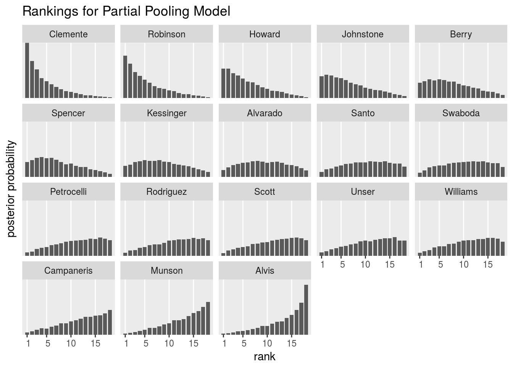
We have followed the original BUGS presentation where the normalized posterior frequency (i.e., the frequency divided by total count) is reported as a probability on the y axis. This plot will look very different for the four different models (see exercises).
Who has the Highest Chance of Success?
We can use our ranking statistic to calculate the event probability for item \(n\) that the item has the highest chance of success using MCMC as
\[ \mathrm{Pr}[\theta_n = \max(\theta)] \ = \ \int_{\Theta} \mathrm{I}[\theta_n = \mathrm{max}(\theta)] \ p(\theta \, | \, y, K) \ \mathrm{d}\theta \ \approx \ \frac{1}{M} \, \sum_{m=1}^M \mathrm{I}[\theta^{(m)}_n = \mathrm{max}(\theta^{(m)})]. \]
Like our other models, the partial pooling mitigates the implicit multiple comparisons being done to calculate the probabilities of rankings. Contrast this with an approach that does a pairwise significance test and then applies a false-discovery correction.
We can compute this straightforwardly using the rank data we have already computed or we could compute it directly as above. Because \(\mathrm{Pr}[\theta_n = \theta_{n'}] = 0\) for \(n \neq n'\), we don’t have to worry about ties.
We define a new generated quantity for the value of the indicator and define it using the already-computed ranks.
generated quantities {
...
int<lower=0, upper=1> is_best[N]; // Pr[player n highest chance of success]
...
for (n in 1:N)
is_best[n] <- (rnk[n] == 1);
...
}This means that is_best[n] will be 1 if player n is the best player. This calculation, which is expressed with ordinary arithmetic operations and assignment, makes clear the way in which variables in Stan behave like random variables. These statements are executed and their expressions evaluated each iteration of the sampler. By saving the results for each draw \(m \in 1{:}M\) in the posterior simulation, we are able to use MCMC to estimate expectations, variances, and quantiles of these random variables. In this case, the expectation of is_best is an event probability.
We can then plot the results for the four models.
df_is_best_for <- function(name, ss) {
is_best <- rep(NA, N);
for (n in 1:N) {
is_best[n] <- mean(ss$is_best[,n]);
}
return(data.frame(list(item=1:N, is_best=is_best, model=name)));
}
df_is_best <- rbind(df_is_best_for("no pool", ss_no_pool),
df_is_best_for("hier", ss_hier),
df_is_best_for("hier (log odds)", ss_hier_logit));
is_best_plot <-
ggplot(df_is_best, aes(x=item, y=is_best)) +
geom_bar(stat = "identity") +
facet_wrap(~ model) +
scale_y_continuous(name = "Pr[player is best]") +
scale_x_discrete(name="player", breaks=c(1, 5, 10, 15)) +
ggtitle("Who is the Best Player?");
is_best_plot;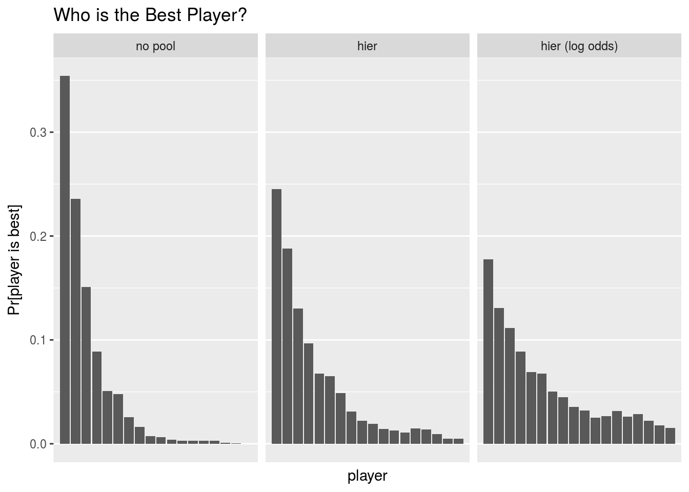
The hierarchical plot is simply the first column of each of the entries in the previous plot in the order they appear; the other plots repeat the process for the no pooling and log-odds hierarchical model.
This question of which player has the highest chance of success (batting ability) doesn’t even make sense in the complete pooling model, because the chance of success parameters are all the same by definition. In the remaining three models, the amount of pooling directly determines the probabilities of being the best player. For example, Roberto Clemente, the top performing player in the first 45 at bats, has an estimated 35%, 25%, and 18% chance of being the best player according to the no-pooling, partial pooling, and partial pooling of log odds models; the tenth best performing player, Ron Swaboda, has an estimated 1%, 2% and 3% chance according to the same models. That is, the probability of being best goes down for high performing players with more pooling, whereas it goes up for below-average players.
Posterior p-Values
We can simulate data from the predictive distribution and compare it to the original data used for fitting the model. If they are not consistent, then either our model is not capturing the aspects of the data we are probing with test statistics or the measurement we made is highly unlikely. That is, extreme \(p\)-values lead us to suspect there is something wrong with our model that deserves further exploration.
In some cases, we are willing to work with models that are wrong in some measurable aspects, but accurately capture quantities of interest for an application. That is, it’s possible for a model to capture some, but not all, aspects of a data set, and still be useful.
Test Statistics and Bayesian \(p\)-Values
A test statistic \(T\) is a function from data to a real value. Following (Gelman et al. 2013), we will concentrate on four specific test statistics for repeated binary trial data (though these choices are fairly general): minimum value, maximum value, sample mean, and sample standard deviation.
Given a test statistic \(T\) and data \(y\), the Bayesian \(p\)-value has a direct definition as a probability,
\[ p_B = \mathrm{Pr}[T(y^{\mathrm{rep}}) \geq T(y) \, | \, y]. \]
Bayesian \(p\)-values, like their traditional counterparts, are probabilities, but not probabilities that a model is true. They simply measure discrepancies between the observed data and what we would expect if the model is true.
Values of Bayesian \(p\)-values near 0 or 1 indicate that the data \(y\) used to estimate the model is unlikely to have been generated by the estimated model. As with other forms of full Bayesian inference, our estimate is the full posterior, not just a point estimate.
As with other Bayesain inferences, we average over the posterior rather than working from a point estimate of the parameters. Expanding this as an expectation of an indicator function,
\[ p_B \ = \ \int_{\Theta, Y^{\mathrm{rep}}} \mathrm{I}[T(y^{\mathrm{rep}}) \geq T(y)] \ p(y^{\mathrm{rep}} \, | \, \theta) \ p(\theta \, | \, y) \ \mathrm{d}\theta, \]
We treat \(y^{\mathrm{rep}}\) as a parameter in parallel with \(\theta\), integrating over possible values \(y^{\mathrm{rep}} \in Y^{\mathrm{rep}}\). As usual, we use the integration sign in a general way intended to include summation, as with the discrete variable \(y^{\mathrm{rep}}\).
The formualation as an expectation leads to the obvious MCMC calculation based on posterior draws \(y^{\mathrm{rep} (m)}\) for \(m \in 1{:}M\),
\[ p_B \approx \frac{1}{M} \, \sum_{m=1}^M \mathrm{I}[T(y^{\mathrm{rep} \ (m)}) \geq T(y)]. \]
In Stan, the test statistics are first defined for the observed data. Because they are functions purely of variables defined in the data block, they can be defined in the transformed data block so that they will be computed only once when the data is read in. In general, it is much more efficient to define variables as transformed data if at all possible.
transformed data {
real min_y; // minimum successes
real max_y; // maximum successes
real mean_y; // sample mean successes
real sd_y; // sample std dev successes
min_y <- min(y);
max_y <- max(y);
mean_y <- mean(to_vector(y));
sd_y <- sd(to_vector(y));
}The code to generate the replicated data is in the generated quantities block.
generated quantities {
...
int<lower=0> y_rep[N]; // replications for existing items
...
for (n in 1:N)
y_rep[n] <- binomial_rng(K[n], theta[n]);
...
}Then the test statistics are defined in the generated quantities block.
generated quantities {
...
real<lower=0> min_y_rep; // posterior predictive min replicated successes
real<lower=0> max_y_rep; // posterior predictive max replicated successes
real<lower=0> mean_y_rep; // posterior predictive sample mean replicated successes
real<lower=0> sd_y_rep; // posterior predictive sample std dev replicated successes
...
min_y_rep <- min(y_rep);
max_y_rep <- max(y_rep);
mean_y_rep <- mean(to_vector(y_rep));
sd_y_rep <- sd(to_vector(y_rep));
...
}Finally, the actual \(p\)-value indicators are computed and assigned to integer values. The calls to to_vector() convert an array of integers to an array of real values so that they are appropriately typed to be the input to the standard deviation calculation.
generated quantities {
...
int<lower=0, upper=1> p_min; // posterior predictive p-values
int<lower=0, upper=1> p_max;
int<lower=0, upper=1> p_mean;
int<lower=0, upper=1> p_sd;
...
p_min <- (min_y_rep >= min_y);
p_max <- (max_y_rep >= max_y);
p_mean <- (mean_y_rep >= mean_y);
p_sd <- (sd_y_rep >= sd_y);
...
}The fit from the Stan program can then be used to display the Bayesian \(p\)-values for each of the models.
print(fit_pool, c("p_min", "p_max", "p_mean", "p_sd"), probs=c());Inference for Stan model: pool.
4 chains, each with iter=5000; warmup=2500; thin=1;
post-warmup draws per chain=2500, total post-warmup draws=10000.
mean se_mean sd n_eff Rhat
p_min 0.59 0.01 0.49 8280 1
p_max 0.47 0.01 0.50 8565 1
p_mean 0.51 0.01 0.50 6436 1
p_sd 0.32 0.00 0.47 9136 1
Samples were drawn using NUTS(diag_e) at Tue Jun 27 21:17:42 2017.
For each parameter, n_eff is a crude measure of effective sample size,
and Rhat is the potential scale reduction factor on split chains (at
convergence, Rhat=1).print(fit_no_pool, c("p_min", "p_max", "p_mean", "p_sd"), probs=c());Inference for Stan model: no-pool.
4 chains, each with iter=5000; warmup=2500; thin=1;
post-warmup draws per chain=2500, total post-warmup draws=10000.
mean se_mean sd n_eff Rhat
p_min 0.10 0 0.30 10000 1
p_max 0.98 0 0.16 9852 1
p_mean 0.68 0 0.47 10000 1
p_sd 0.99 0 0.08 9771 1
Samples were drawn using NUTS(diag_e) at Tue Jun 27 21:18:34 2017.
For each parameter, n_eff is a crude measure of effective sample size,
and Rhat is the potential scale reduction factor on split chains (at
convergence, Rhat=1).print(fit_hier, c("p_min", "p_max", "p_mean", "p_sd"), probs=c());Inference for Stan model: hier.
4 chains, each with iter=5000; warmup=2500; thin=1;
post-warmup draws per chain=2500, total post-warmup draws=10000.
mean se_mean sd n_eff Rhat
p_min 0.33 0.01 0.47 6614 1
p_max 0.75 0.01 0.44 6616 1
p_mean 0.53 0.01 0.50 6822 1
p_sd 0.76 0.01 0.43 4350 1
Samples were drawn using NUTS(diag_e) at Tue Jun 27 21:19:43 2017.
For each parameter, n_eff is a crude measure of effective sample size,
and Rhat is the potential scale reduction factor on split chains (at
convergence, Rhat=1).print(fit_hier_logit, c("p_min", "p_max", "p_mean", "p_sd"), probs=c());Inference for Stan model: hier-logit.
4 chains, each with iter=5000; warmup=2500; thin=1;
post-warmup draws per chain=2500, total post-warmup draws=10000.
mean se_mean sd n_eff Rhat
p_min 0.46 0.01 0.50 9464 1
p_max 0.62 0.00 0.49 10000 1
p_mean 0.51 0.00 0.50 10000 1
p_sd 0.56 0.01 0.50 8171 1
Samples were drawn using NUTS(diag_e) at Tue Jun 27 21:21:33 2017.
For each parameter, n_eff is a crude measure of effective sample size,
and Rhat is the potential scale reduction factor on split chains (at
convergence, Rhat=1).The only worrisomely extreme value is the \(p\)-value for standard deviation in the no-pooling model, where 99% of the simulated data sets under the model had standard deviations among the number of hits greater than the actual data. Note that we could’ve constructed our posterior p-values to run in the opposite direction, or could formulate two-sided tests.
We can easily reproduce Figure 6.12 from (Gelman et al. 2013), which shows the posterior predictive distribution for the test statistic, the observed value as a vertical line, and the p-value for each of the tests. Here is the plot for the basic hierarchical model.
y_min <- min(y);
y_max <- max(y);
y_mean <- mean(y);
y_sd <- sd(y);
pvals_frame <- function(ss, model_name) {
df_pvals_min <- data.frame(list(test_stat = rep("min", M),
replication = ss$min_y_rep),
model = rep(model_name, M));
df_pvals_max <- data.frame(list(test_stat = rep("max", M),
replication = ss$max_y_rep),
model = rep(model_name, M));
df_pvals_mean <- data.frame(list(test_stat = rep("mean", M),
replication = ss$mean_y_rep),
model = rep(model_name, M));
df_pvals_sd <- data.frame(list(test_stat = rep("sd", M),
replication = ss$sd_y_rep),
model = rep(model_name, M));
return(rbind(df_pvals_min, df_pvals_max, df_pvals_mean, df_pvals_sd));
}
df_pvals <- rbind(pvals_frame(ss_hier, "partial pool"),
pvals_frame(ss_hier_logit, "partial (logit)"),
pvals_frame(ss_pool, "complete pool"),
pvals_frame(ss_no_pool, "no pool"));
post_test_stat_plot <-
ggplot(df_pvals, aes(replication)) +
facet_grid(model ~ test_stat) +
geom_histogram(binwidth = 0.5, colour="black", size = 0.25, fill="white") +
theme(axis.title.y = element_blank(),
axis.text.y = element_blank(),
axis.ticks.y = element_blank()) +
xlab("value in replicated data set") +
geom_vline(aes(xintercept = y_val),
data = data.frame(y_val = rep(c(rep(y_min, M), rep(y_max, M),
rep(y_mean, M), rep(y_sd, M)), 4),
test_stat = df_pvals$test_stat,
replication = df_pvals$replication),
colour = "blue", size = 0.25) +
ggtitle("Posterior p-values")
post_test_stat_plot;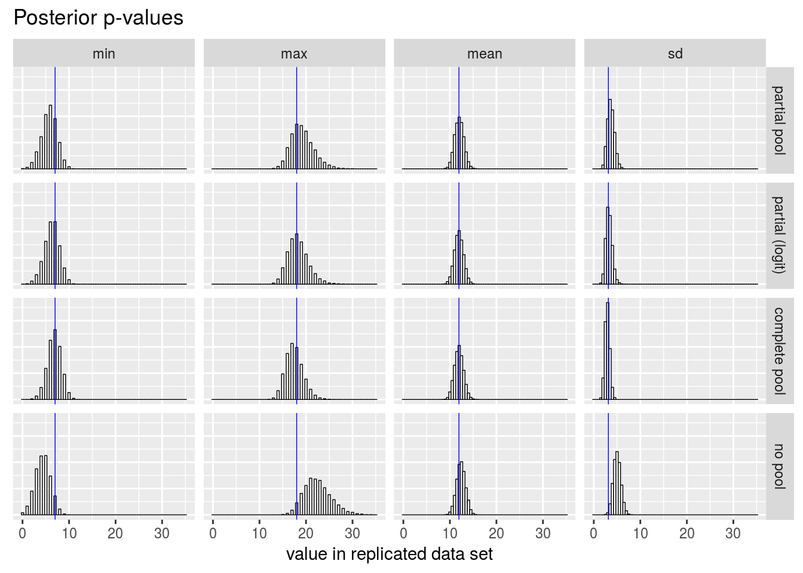
Graphical Posterior Predictive Checks
In this section, we will compare the simulated data from the two different hierarchical models, one with the Beta prior on the chance-of-success scale and one with a normal prior on the log-odds scale. Following the advice of Gelman et al. (2013), we will take the fitted parameters of the data set and generate replicated data sets, then compare the replicated data sets visually to the actual data set.
As discussed by Gelman et al. (2013, p. 143), there is a choice of which parameters to fix and which to simulate. We can generate new trials using fitted chance-of-success parameters (\(\alpha\)), or we can generate new items using the population parameters (\(\mu\) and \(\sigma\)). We’ll provide both in the model below for comparison. In both cases, we simulate from posterior draws, not from the posterior mean or other point estimates; Stan makes this easy with its generated quantities block. Then we’ll plot several of those versus the real data.
The Stan code to generate replicated data for existing items (y_rep) and for new items drawn from the population distribution (y_pop_rep) is in the generated quantities block.
generated quantities {
...
int<lower=0> y_rep[N]; // replications for existing items
int<lower=0> y_pop_rep[N]; // replications for simulated items
...
for (n in 1:N)
y_rep[n] <- binomial_rng(K[n], theta[n]);
for (n in 1:N)
y_pop_rep[n] <- binomial_rng(K[n], inv_logit(normal_rng(mu, sigma)));
}The random population member generation is put through the inverse-logit (logistic sigmoid) function to generate a probability, then a replication generated based on the number of trials. The reason we have to go through looping is that Stan hasn’t (yet) vectorized the binomial RNGs; the reason we have to use the explicit inverse-logit formulation is that there is no binomial-logit RNG.
For the basic hierarchical model, the population replication is carried out as
for (n in 1:N)
y_pop_rep[n] <- binomial_rng(K[n],
beta_rng(phi * kappa,
(1 - phi) * kappa));
In this case, the Beta variate is being generated inside the binomial pseudorandom number generator.
We can now print the replicated values y_rep in both the hierarchical and hierarchical logit models.
print(fit_hier, c("y_rep", "y_pop_rep[1]"), probs=c(0.1, 0.5, 0.9));Inference for Stan model: hier.
4 chains, each with iter=5000; warmup=2500; thin=1;
post-warmup draws per chain=2500, total post-warmup draws=10000.
mean se_mean sd 10% 50% 90% n_eff Rhat
y_rep[1] 14.49 0.05 3.92 10 14 20 7174 1
y_rep[2] 14.08 0.05 3.87 9 14 19 7236 1
y_rep[3] 13.69 0.04 3.74 9 14 19 8050 1
y_rep[4] 13.23 0.04 3.68 9 13 18 10000 1
y_rep[5] 12.82 0.04 3.66 8 13 18 10000 1
y_rep[6] 12.79 0.04 3.62 8 13 18 10000 1
y_rep[7] 12.43 0.04 3.59 8 12 17 10000 1
y_rep[8] 12.07 0.04 3.60 8 12 17 10000 1
y_rep[9] 11.62 0.03 3.50 7 12 16 10000 1
y_rep[10] 11.62 0.04 3.54 7 11 16 10000 1
y_rep[11] 11.21 0.03 3.46 7 11 16 10000 1
y_rep[12] 11.22 0.03 3.46 7 11 16 10000 1
y_rep[13] 11.18 0.03 3.46 7 11 16 10000 1
y_rep[14] 11.26 0.03 3.48 7 11 16 10000 1
y_rep[15] 11.21 0.04 3.51 7 11 16 10000 1
y_rep[16] 10.87 0.03 3.43 7 11 15 10000 1
y_rep[17] 10.42 0.03 3.38 6 10 15 10000 1
y_rep[18] 9.98 0.03 3.40 6 10 14 10000 1
y_pop_rep[1] 12.02 0.04 4.13 7 12 17 9616 1
Samples were drawn using NUTS(diag_e) at Tue Jun 27 21:19:43 2017.
For each parameter, n_eff is a crude measure of effective sample size,
and Rhat is the potential scale reduction factor on split chains (at
convergence, Rhat=1).print(fit_hier_logit, c("y_rep", "y_pop_rep[1]"), probs=c(0.1, 0.5, 0.9));Inference for Stan model: hier-logit.
4 chains, each with iter=5000; warmup=2500; thin=1;
post-warmup draws per chain=2500, total post-warmup draws=10000.
mean se_mean sd 10% 50% 90% n_eff Rhat
y_rep[1] 13.19 0.04 3.61 9 13 18 10000 1
y_rep[2] 13.01 0.03 3.50 9 13 18 10000 1
y_rep[3] 12.77 0.03 3.45 8 13 17 10000 1
y_rep[4] 12.59 0.03 3.41 8 12 17 10000 1
y_rep[5] 12.38 0.03 3.37 8 12 17 10000 1
y_rep[6] 12.41 0.03 3.39 8 12 17 10000 1
y_rep[7] 12.18 0.03 3.32 8 12 17 10000 1
y_rep[8] 11.97 0.03 3.29 8 12 16 10000 1
y_rep[9] 11.74 0.03 3.30 8 12 16 10000 1
y_rep[10] 11.74 0.03 3.28 8 12 16 10000 1
y_rep[11] 11.47 0.03 3.25 7 11 16 10000 1
y_rep[12] 11.51 0.03 3.28 7 11 16 10000 1
y_rep[13] 11.56 0.03 3.31 7 11 16 10000 1
y_rep[14] 11.53 0.03 3.27 7 11 16 10000 1
y_rep[15] 11.51 0.03 3.27 7 11 16 10000 1
y_rep[16] 11.31 0.03 3.28 7 11 16 10000 1
y_rep[17] 11.13 0.03 3.26 7 11 15 10000 1
y_rep[18] 11.02 0.03 3.32 7 11 15 10000 1
y_pop_rep[1] 11.98 0.04 3.53 8 12 17 10000 1
Samples were drawn using NUTS(diag_e) at Tue Jun 27 21:21:33 2017.
For each parameter, n_eff is a crude measure of effective sample size,
and Rhat is the potential scale reduction factor on split chains (at
convergence, Rhat=1).The variable y_rep is ordered because it’s based on the actual items, which were sorted by success count in the original data. On the other hand, the y_pop_rep values are fully exchangeable, so indistinguishable in their posterior (other than MCMC error). Because the population replicates are exchangeable, we only printed the first for each model.
We can plot some of the simulated data sets along with the original data set to do a visual inspection as suggested by Gelman et al. (2013). Conveniently, RStan’s extract() function has already permuted the posterior draws, so we can just take the initial fifteen for display.
df_post <- data.frame(list(dataset = rep("REAL", N),
y = y));
for (n in 1:15) {
df_post <- rbind(df_post,
data.frame(list(dataset = rep(paste("repl ", n), N),
y = ss_hier_logit$y_rep[n,])));
}
post_plot <-
ggplot(df_post, aes(y)) +
facet_wrap(~ dataset) +
stat_count(width=0.8) +
scale_x_discrete(limits=c(5, 10, 15, 20)) +
scale_y_discrete(name="count", limits=c(0, 2, 4)) +
ggtitle("Existing Item Replication (Normal Prior on Log Odds)");
post_plot;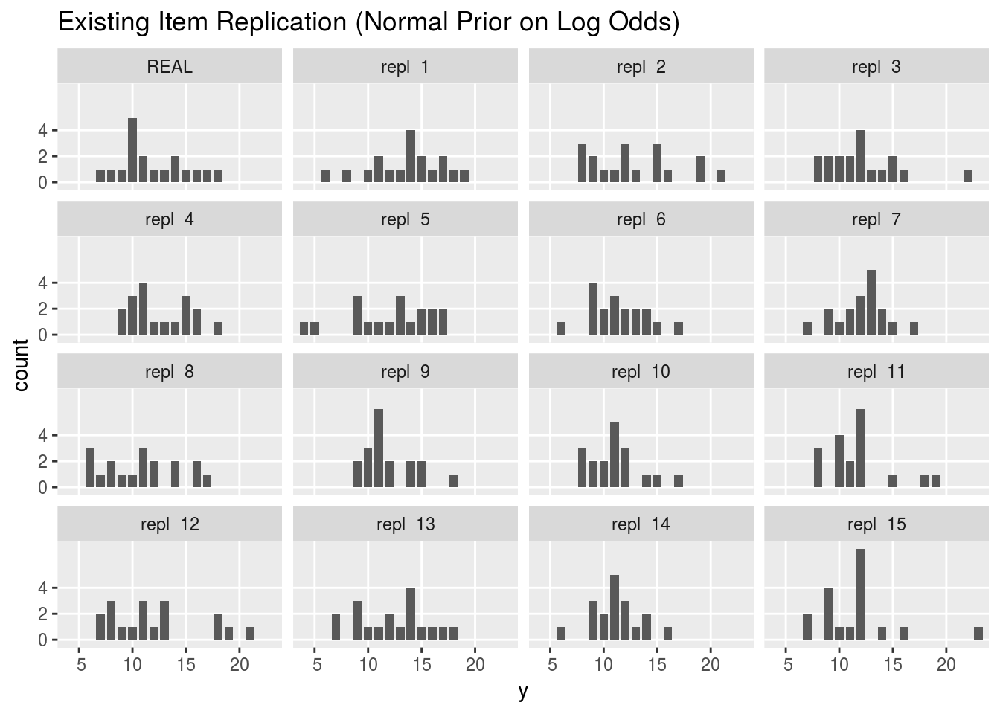
And now we can do the same thing for the population-level replication; because the code’s the same, we do not echo it to the output.
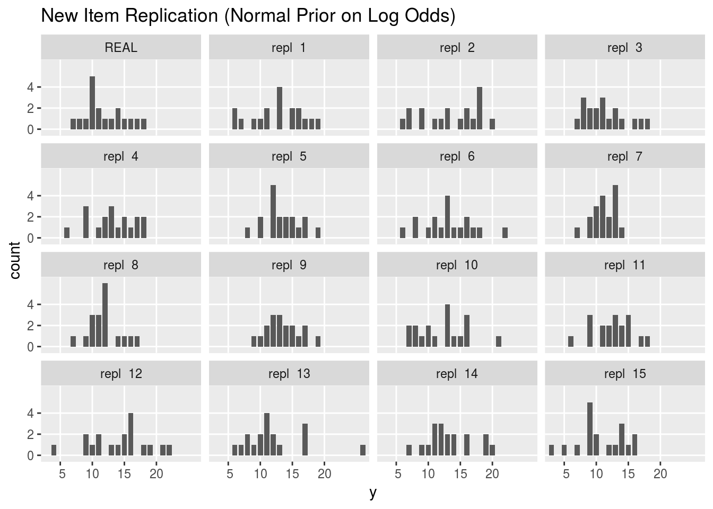
The posterior simulations are not unreasonable for a binomial likelihood, but are noticeably more spread out than the actual data. This may actually have more to do with how the data were selected out of all the major league baseball players than the actual data distribution. Efron and Morris (1975, p 312) write, “This sample was chosen because we wanted between 30 and 50 at bats to assure a satisfactory approximation of the binomial by the normal distribution while leaving the bulk of at bats to be estimated. We also wanted to include an unusually good hitter (Clemente) to test the method with at least one extreme parameter, a situation expected to be less favorable to Stein’s estimator. Stein’s estimator requires equal variances, or in this situation, equal at bats, so the remaining 17 players are all whom either the April 26 or May 3 New York Times reported with 45 at bats.”
Here are the same plots for the basic hierarchical model. This time we suppress printing the ggplot code, which is the same as before, and just show the graphs.

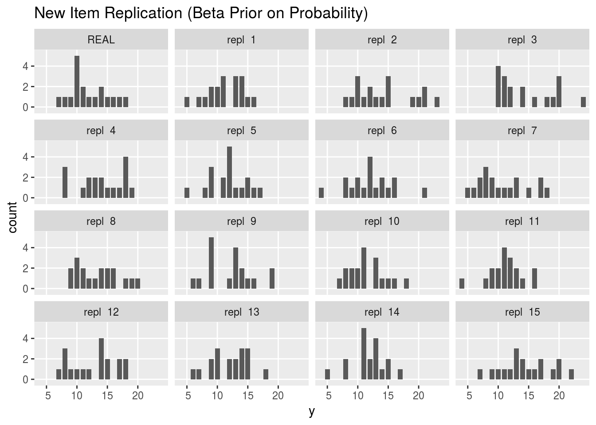
The plots for replications of existing items is radically different with the beta prior, with the replications being much closer to the originally observed values. The replications for new items look similar. By eye, it looks like the beta prior is controlling the posterior variance of individual item chance-of-success estimates much better, despite producing wider posterior 80% intervals for chance of success.
Discussion
A hierarchical model introduces an estimation bias toward the population mean and the stronger the bias, the less variance there is in the estimates for the items. Exactly how much bias and variance is warranted can be estimated by further calibrating the model and testing where its predictions do not bear out. In this case, both models yield similar estimates, with the log-odds model trading a bit more bias for variance in its estimates (the models did not have matched hyperpriors; see the exercises). With very little data, there is very little we can do to gain sharp inferences other than provide more informative priors, which is well worth doing when prior information is available. On the other hand, with more data, the models provide similar results (see the exericses), and in the limit, all of the models (other than complete pooling) converge to posteriors that are delta functions around the empirical chance of success (i.e., the maximum likelihood estimate). Meanwhile, Bayesian inference is allowing us to make more accurate predictions with the data available before we hit that asymptotic regime.
Exercises
We usually recommend fitting simulated data. We have done that in the past for these models, but it is a worthwhile exercise. For all or some of the models, generate data according to the prior and test whether the fitted model recovers the parameter values within their appropriate intervals.
The hyperpriors do not match in our two hierarchical models because the direct model uses a uniform distribution on the prior mean, whereas the log-odds model used a weakly informative prior. First, calculate the parameters for the direct prior that make it as close as possible to the log-odds prior. Then fit the model and compare the results.
Calculate the Jacobian of the log-odds transform on a chance of success and show that it produces the unit logistic (i.e., \(\mathsf{Logistic}(0,1)\)) distribution.
Generate fake data according to the pooling, no-pooling, and one of the hierarchical models. Fit the model and consider the coverage of the posterior 80% intervals.
By calculating the appropriate Jacobian, show that if \(\kappa \sim \mathsf{Pareto}(1, 1.5)\) (i.e., \(p(\kappa) \propto \kappa^{-\frac{5}{2}}\)), then \(\kappa^{-\frac{1}{2}}\) has a uniform distribution.
Fit one of the data sets with a different number of initial trials for each item. What effect does the number of initial trials have on the posterior? Is there a way to quantify the effect?
How sensitive is the basic no-pooling model to the choice of prior? Consider using knowledge of baseball (as in the logit example) to provide a weakly informative prior for \(\theta_n\). How, if at all, does this affect posterior inference?
Running on the larger baseball data set, how do the posterior means and 80% intervals compare to those in the smaller data set for \(\kappa\) and \(\phi\)? Is the result inevitable for a larger data set?
Recreate the results presented in (Betancourt and Girolami 2015) by simulating data according to the hierarchical logit model of increasing size per group and compare how the centered and non-centered parameterizations perform in terms of convergence and effective sample size.
How sensitive is the hierarchical model to the priors on the hyperparameters \(\kappa, \phi\)? Consider a weakly informative prior on \(\phi\) and alternative distributional families for \(\kappa\) (e.g., exponential).
Write a Stan model to predict \(z_n\) based on the no pooling and complete pooling models and compare those to the predictions based on the hierarchical model. Which is better calibrated in the sense of having roughly the right number of actual values fall within the prediction intervals? Then, compare the prediction made from a maximum likelihood point estimate of performance using a binomial predictive likelihood.
Why do the plots normalize properly (sum to 1) in both the Rankings and Who’s the Best Player plots?
If a model is well calibrated, what is the expected distribution of observed items in the 50% posterior predictive interval? How would this support a hypothesis test for model calibration? Could such a test be formulated in terms of Bayesian posterior \(p\)-values?
If the inverse CDFs of the marginal posteriors were available (or approximated via sorting MCMC draws), what is the expected distribution of the observed points in a well-calibrated model? How is this like testing all of the intervals? What problems might arise? Hint: see (Gneiting et al. 2007).
Lunn et al. (2013) contains a running analysis of pediatric cardiac surgery mortality for 12 hospitals. Reanalyze their data with Stan using the models in this note. The models will have to be generalized to allow \(K\) to vary by item \(n\). The data is available from Stan’s example model repository as BUGS Vol 1 examples: Surgical and the WinBUGS project hosts the original example description (which has different counts from the data analyzed by Lunn et al.); Lunn et al. analyze slightly different data in the BUGS book than in their on-line example.
How sensitive is the logistic model to the hyperprior? If we made it much less informative or much more informative, how much do the fitted values differ? How do the predictions differ? Evaluate the prior used by Lunn et al. (2013), which is \(\mathsf{Uniform}(-100,100)\) for \(\mu\) and \(\mathsf{Uniform}(0, 100)\) for \(\sigma\). Be sure to add constraints on the declarations of \(\mu\) and \(\sigma\) to match the constraints. What happens if the width of the uniform grows much wider or much narrower?
For the no pooling and complete pooling models (fixed priors), derive the analytic posterior and code it using a random-number generator in the generated quantities block.
Show that the posterior predictive distribution \(p(\tilde{y} \, | \, y)\) is a properly normalized density.
For the partial pooling models (hierarchical priors), marginalize out the chance-of-success parameters (\(\theta\) or \(\alpha\)) and sample the higher-level parameters for the prior directly.
Generate rankings plot for the other three models; compare and contrast to the basic partial pooling model.
What are some other test statistics that might be used to evaluate our model fit to data using Bayesian \(p\)-Values$? Code some up and evaluate on one of the data sets given here or on simulated data.
Discuss why the lack of an alternative hypotehsis makes it impossible to perform power calculations with Bayesian \(p\)-values. What are the implications for hypothesis testing for model fit?
Show why posterior \(p\)-values are expected to have a \(\mathsf{Uniform}(0,1)\) distribution if a model is perfectly calibrated. Can you perform simulations to show that this is true in a particular case?
Figure out how to take all the hard-coded output analysis in here and make it dynamic by making better use of knitr. And take all the cut-and-paste duplicated code and wrap it into functions.
Discuss the difference between batting average and on-base percentage as random variables. Consider particularly the denominator (at-bat versus plate appearance). Is the denominator in these kinds of problems always a random variable itself? Why might this be important in inference?
Write a model to do the direct posterior predictive density calculation (you will need to exponentiate the log value). Does it underflow? At what point will a valid log density underflow (or overflow)? If we try to apply the log sum of exponentials trick to a sequence of values, for which \(\max u\) will it overflow or underflow?
Acknowledgements
This presentation derives directly from four sources: Bayesian Data Analysis (Gelman et al. 2013), BUGS 0.5 Examples (Spiegelhalter et al. 1996), The BUGS Book (Lunn et al. 2014), and Daniel Lee’s hands-on Stan tutorial for a short-course we taught (with Andrew Gelman) in 2015.
I’d like to thank Jiqiang Guo, Aki Vehtari, Michael Betancourt, and Jonah Gabry for comments on everything from the math to the R code. Andrew Gelman objected to my using batting-average data as being not very useful for baseball (compared to, say, on-base percentage); I hope the exercise addressing his concerns and the additional data sets partially make up for my choice.
References
Betancourt, M. and Girolami, M. (2015) Hamiltonian Monte Carlo for hierarchical models. Current Trends in Bayesian Methodology with Applications 79.
Efron, B. and Morris, C. (1975) Data analysis using Stein’s estimator and its generalizations. Journal of the American Statistical Association 70(350), 311–319. [ pdf ]
Gelman, A., Carlin, J. B., Stern, H. S., Dunson, D. B., Vehtari, A., and Rubin, D. B. (2013) Bayesian Data Analysis, 3rd Edition. Chapman & Hall/CRC Press, London.
Gelman, A. and Hill, J. (2007) Data Analysis Using Regression and Multilevel-Hierarchical Models. Cambridge University Press, Cambridge, United Kingdom.
Gelman, A., Hill, J., and Yajima, M. (2012) Why we (usually) don’t have to worry about multiple comparisons. Journal of Research on Educational Effectiveness 5, 189–211. [ pdf ]
Gneiting, T., Balabdaoui, F., and Raftery, A. E. (2007) Probabilistic forecasts, calibration and sharpness. Journal of the Royal Statistical Society: Series B (Statistical Methodology), 69(2), 243–268.
Lunn, D., Jackson, C., Best, N., Thomas, A., and Spiegelhalter, D. (2013) The BUGS Book: A Practical Introduction to Bayesian Analysis. Chapman & Hall/CRC Press.
Neal, R. M. (2003) Slice sampling. Annals of Statistics 31(3):705–767.
Papaspiliopoulos, O., Roberts, G. O., and Skold, M. (2003) Non-centered parameterisations for hierarchical models and data augmentation. In Bayesian Statistics 7: Proceedings of the Seventh Valencia International Meeting, edited by Bernardo, J. M., Bayarri, M. J., Berger, J. O., Dawid, A. P., Heckerman, D., Smith, A. F. M., and West, M. Oxford University Press, Chicago.
Plummer, M., Best, N., Cowles, K., & Vines, K. (2006). CODA: Convergence diagnosis and output analysis for MCMC. R News, 6(1), 7–11.
Spiegelhalter, D., Thomas, A., Best, N., & Gilks, W. (1996) BUGS 0.5 Examples. MRC Biostatistics Unit, Institute of Public health, Cambridge, UK.
Stan Development Team (2015) Stan Modeling Language User’s Guide and Reference Manual. [web page]
Tarone, R. E. (1982) The use of historical control information in testing for a trend in proportions. Biometrics 38(1):215–220.
Data Sets Included
Rat tumors (N = 71)
Tarone (1982) provides a data set of tumor incidence in historical control groups of rats; specifically endometrial stromal polyps in female lab rats of type F344. The data set is taken from the book site for (Gelman et al. 2013):
- Data: rat-tumors.csv
- R script: rat-tumors.R
- Data source: http://www.stat.columbia.edu/~gelman/book/data/rats.asc
Surgical mortality (N = 12)
Spiegelhalter et al. (1996) provide a data set of mortality rates in 12 hospitals performing cardiac surgery in babies. We just manually entered the data from the paper; it is also available in the Stan example models repository in R format.
- Data: surgical-mortality.csv
- R script: surgical-mortality.R
- Data source: Unknown
Baseball hits 1970 (N = 18)
Efron and Morris (1975) provide a non-random sample of 18 players from the 1970 Major League Baseball season. A web site with the data is available:
- Data: baseball-hits-1970.csv
- R script: baseball-hits-1970.R
- Data source: http://www.swarthmore.edu/NatSci/peverso1/Sports%20Data/JamesSteinData/Efron-Morris%20Baseball/EfronMorrisBB.txt
Baseball hits 1996 AL (N = 308)
Carpenter (2009) updates Efron and Morris’s (1975) data set for the entire set of players for the entire 1996 American League season of Major League Baseball. The data was originally downloaded from the baseball1.com.
- Data: baseball-hits-1996.csv
- R Script: baseball-hits-1996.R
- Data Source: http://lingpipe-blog.com/2009/09/23/bayesian-estimators-for-the-beta-binomial-model-of-batting-ability
Appendix: Full Stan Programs
pool.stan
data {
int<lower=0> N; // items
int<lower=0> K[N]; // initial trials
int<lower=0> y[N]; // initial successes
int<lower=0> K_new[N]; // new trials
int<lower=0> y_new[N]; // new successes
}
transformed data {
real min_y; // minimum successes
real max_y; // maximum successes
real mean_y; // sample mean successes
real sd_y; // sample std dev successes
min_y <- min(y);
max_y <- max(y);
mean_y <- mean(to_vector(y));
sd_y <- sd(to_vector(y));
}
parameters {
real<lower=0, upper=1> phi; // chance of success (pooled)
}
model {
y ~ binomial(K, phi); // likelihood
}
generated quantities {
vector<lower=0, upper=1>[N] theta; // chance-of-success
real log_p_new; // posterior predictive log density remaining trials
int<lower=0> z[N]; // posterior prediction remaining trials
int<lower=0, upper=1> some_ability_gt_350; // Pr[some theta > 0.35]
int<lower=0, upper=1> avg_gt_400[N]; // Pr[season avg of n] >= 0.400
int<lower=0, upper=1> ability_gt_400[N]; // Pr[chance-of-success of n] >= 0.400
int<lower=0> y_rep[N]; // replications for existing items
real<lower=0> min_y_rep; // posterior predictive min replicated successes
real<lower=0> max_y_rep; // posterior predictive max replicated successes
real<lower=0> mean_y_rep; // posterior predictive sample mean replicated successes
real<lower=0> sd_y_rep; // posterior predictive sample std dev replicated successes
int<lower=0, upper=1> p_min; // posterior predictive p-values
int<lower=0, upper=1> p_max;
int<lower=0, upper=1> p_mean;
int<lower=0, upper=1> p_sd;
theta <- rep_vector(phi, N);
log_p_new <- 0;
for (n in 1:N)
log_p_new <- log_p_new + binomial_log(y_new[n], K_new[n], theta[n]);
for (n in 1:N)
z[n] <- binomial_rng(K_new[n], theta[n]);
some_ability_gt_350 <- (max(theta) > 0.35);
for (n in 1:N)
avg_gt_400[n] <- (((y[n] + z[n]) / (0.0 + K[n] + K_new[n])) > 0.400);
for (n in 1:N)
ability_gt_400[n] <- (theta[n] > 0.400);
for (n in 1:N)
y_rep[n] <- binomial_rng(K[n], theta[n]);
min_y_rep <- min(y_rep);
max_y_rep <- max(y_rep);
mean_y_rep <- mean(to_vector(y_rep));
sd_y_rep <- sd(to_vector(y_rep));
p_min <- (min_y_rep >= min_y);
p_max <- (max_y_rep >= max_y);
p_mean <- (mean_y_rep >= mean_y);
p_sd <- (sd_y_rep >= sd_y);
} no-pool.stan
data {
int<lower=0> N; // items
int<lower=0> K[N]; // initial trials
int<lower=0> y[N]; // initial successes
int<lower=0> K_new[N]; // new trials
int<lower=0> y_new[N]; // new successes
}
transformed data {
real min_y; // minimum successes
real max_y; // maximum successes
real mean_y; // sample mean successes
real sd_y; // sample std dev successes
min_y <- min(y);
max_y <- max(y);
mean_y <- mean(to_vector(y));
sd_y <- sd(to_vector(y));
}
parameters {
vector<lower=0, upper=1>[N] theta; // chance of success
}
model {
y ~ binomial(K, theta); // likelihood
}
generated quantities {
real log_p_new; // posterior predictive log density remaining trials
int<lower=0> z[N]; // posterior prediction remaining trials
int<lower=0, upper=1> some_ability_gt_350; // Pr[some theta > 0.35]
int<lower=0, upper=1> avg_gt_400[N]; // Pr[season avg of n] >= 0.400
int<lower=0, upper=1> ability_gt_400[N]; // Pr[chance-of-success of n] >= 0.400
int<lower=1, upper=N> rnk[N]; // rank of player n
int<lower=0, upper=1> is_best[N]; // Pr[player n highest chance of success]
int<lower=0> y_rep[N]; // replications for existing items
real min_y_rep; // posterior predictive min replicated successes
real max_y_rep; // posterior predictive max replicated successes
real mean_y_rep; // posterior predictive sample mean replicated successes
real sd_y_rep; // posterior predictive sample std dev replicated successes
int p_min; // posterior p-val for min test stat
int p_max; // posterior p-val for max test stat
int p_mean; // posterior p-val for sample mean test stat
int p_sd; // posterior p-val for smaple std dev test stat
log_p_new <- 0;
for (n in 1:N)
log_p_new <- log_p_new + binomial_log(y_new[n], K_new[n], theta[n]);
for (n in 1:N)
z[n] <- binomial_rng(K_new[n], theta[n]);
some_ability_gt_350 <- (max(theta) > 0.35);
for (n in 1:N)
avg_gt_400[n] <- (((y[n] + z[n]) / (0.0 + K[n] + K_new[n])) > 0.400);
for (n in 1:N)
ability_gt_400[n] <- (theta[n] > 0.400);
{
int dsc[N];
dsc <- sort_indices_desc(theta);
for (n in 1:N)
rnk[dsc[n]] <- n;
}
for (n in 1:N)
is_best[n] <- (rnk[n] == 1);
for (n in 1:N)
y_rep[n] <- binomial_rng(K[n], theta[n]);
min_y_rep <- min(y_rep);
max_y_rep <- max(y_rep);
mean_y_rep <- mean(to_vector(y_rep));
sd_y_rep <- sd(to_vector(y_rep));
p_min <- (min_y_rep >= min_y);
p_max <- (max_y_rep >= max_y);
p_mean <- (mean_y_rep >= mean_y);
p_sd <- (sd_y_rep >= sd_y);
} hier.stan
data {
int<lower=0> N; // items
int<lower=0> K[N]; // initial trials
int<lower=0> y[N]; // initial successes
int<lower=0> K_new[N]; // new trials
int<lower=0> y_new[N]; // new successes
}
transformed data {
real min_y; // minimum successes
real max_y; // maximum successes
real mean_y; // sample mean successes
real sd_y; // sample std dev successes
min_y <- min(y);
max_y <- max(y);
mean_y <- mean(to_vector(y));
sd_y <- sd(to_vector(y));
}
parameters {
real<lower=0, upper=1> phi; // population chance of success
real<lower=1> kappa; // population concentration
vector<lower=0, upper=1>[N] theta; // chance of success
}
model {
kappa ~ pareto(1, 1.5); // hyperprior
theta ~ beta(phi * kappa, (1 - phi) * kappa); // prior
y ~ binomial(K, theta); // likelihood
}
generated quantities {
real log_p_new; // posterior predictive log density remaining trials
int<lower=0> z[N]; // posterior prediction remaining trials
int<lower=0, upper=1> some_ability_gt_350; // Pr[some theta > 0.35]
int<lower=0, upper=1> avg_gt_400[N]; // Pr[season avg of n] >= 0.400
int<lower=0, upper=1> ability_gt_400[N]; // Pr[chance-of-success of n] >= 0.400
int<lower=1, upper=N> rnk[N]; // rank of player n
int<lower=0, upper=1> is_best[N]; // Pr[player n highest chance of success]
int<lower=0> y_rep[N]; // replications for existing items
int<lower=0> y_pop_rep[N]; // replications for simulated items
real min_y_rep; // posterior predictive min replicated successes
real max_y_rep; // posterior predictive max replicated successes
real mean_y_rep; // posterior predictive sample mean replicated successes
real sd_y_rep; // posterior predictive sample std dev replicated successes
int p_min; // posterior predictive p-values
int p_max;
int p_mean;
int p_sd;
log_p_new <- 0;
for (n in 1:N)
log_p_new <- log_p_new + binomial_log(y_new[n], K_new[n], theta[n]);
for (n in 1:N)
z[n] <- binomial_rng(K_new[n], theta[n]);
some_ability_gt_350 <- (max(theta) > 0.35);
for (n in 1:N)
avg_gt_400[n] <- (((y[n] + z[n]) / (0.0 + K [n] + K_new[n])) > 0.400);
for (n in 1:N)
ability_gt_400[n] <- (theta[n] > 0.400);
{
int dsc[N];
dsc <- sort_indices_desc(theta);
for (n in 1:N)
rnk[dsc[n]] <- n;
}
for (n in 1:N)
is_best[n] <- (rnk[n] == 1);
for (n in 1:N)
y_rep[n] <- binomial_rng(K[n], theta[n]);
for (n in 1:N)
y_pop_rep[n] <- binomial_rng(K[n],
beta_rng(phi * kappa,
(1 - phi) * kappa));
min_y_rep <- min(y_rep);
max_y_rep <- max(y_rep);
mean_y_rep <- mean(to_vector(y_rep));
sd_y_rep <- sd(to_vector(y_rep));
p_min <- (min_y_rep >= min_y);
p_max <- (max_y_rep >= max_y);
p_mean <- (mean_y_rep >= mean_y);
p_sd <- (sd_y_rep >= sd_y);
} hier-logit.stan
data {
int<lower=0> N; // items
int<lower=0> K[N]; // initial trials
int<lower=0> y[N]; // initial successes
int<lower=0> K_new[N]; // new trials
int<lower=0> y_new[N]; // new successes
}
transformed data {
real min_y; // minimum successes
real max_y; // maximum successes
real mean_y; // sample mean successes
real sd_y; // sample std dev successes
min_y <- min(y);
max_y <- max(y);
mean_y <- mean(to_vector(y));
sd_y <- sd(to_vector(y));
}
parameters {
real mu; // population mean of success log-odds
real<lower=0> sigma; // population sd of success log-odds
vector[N] alpha_std; // success log-odds (standardized)
}
model {
mu ~ normal(-1, 1); // hyperprior
sigma ~ normal(0, 1); // hyperprior
alpha_std ~ normal(0, 1); // prior (hierarchical)
y ~ binomial_logit(K, mu + sigma * alpha_std); // likelihood
}
generated quantities {
vector[N] theta; // chance of success
real log_p_new; // posterior predictive log density remaining trials
int<lower=0> z[N]; // posterior prediction remaining trials
int<lower=0, upper=1> some_ability_gt_350; // Pr[some theta > 0.35]
int<lower=0, upper=1> avg_gt_400[N]; // Pr[season avg of n] >= 0.400
int<lower=0, upper=1> ability_gt_400[N]; // Pr[chance-of-success of n] >= 0.400
int<lower=1, upper=N> rnk[N]; // rank of player n
int<lower=0, upper=1> is_best[N]; // Pr[player n highest chance of success]
int<lower=0> y_rep[N]; // replications for existing items
int<lower=0> y_pop_rep[N]; // replications for simulated items
real min_y_rep; // posterior predictive min replicated successes
real max_y_rep; // posterior predictive max replicated successes
real mean_y_rep; // posterior predictive sample mean replicated successes
real sd_y_rep; // posterior predictive sample std dev replicated successes
int p_min; // posterior predictive p-values
int p_max;
int p_mean;
int p_sd;
for (n in 1:N)
theta[n] <- inv_logit(mu + sigma * alpha_std[n]);
log_p_new <- 0;
for (n in 1:N)
log_p_new <- log_p_new + binomial_log(y_new[n], K_new[n], theta[n]);
for (n in 1:N)
z[n] <- binomial_rng(K_new[n], theta[n]);
some_ability_gt_350 <- (max(theta) > 0.35);
for (n in 1:N)
avg_gt_400[n] <- (((y[n] + z[n]) / (0.0 + K[n] + K_new[n])) > 0.400);
for (n in 1:N)
ability_gt_400[n] <- (theta[n] > 0.400);
{
int dsc[N];
dsc <- sort_indices_desc(theta);
for (n in 1:N)
rnk[dsc[n]] <- n;
}
for (n in 1:N)
is_best[n] <- (rnk[n] == 1);
for (n in 1:N)
y_rep[n] <- binomial_rng(K[n], theta[n]);
for (n in 1:N)
y_pop_rep[n] <- binomial_rng(K[n], inv_logit(normal_rng(mu, sigma)));
min_y_rep <- min(y_rep);
max_y_rep <- max(y_rep);
mean_y_rep <- mean(to_vector(y_rep));
sd_y_rep <- sd(to_vector(y_rep));
p_min <- (min_y_rep >= min_y);
p_max <- (max_y_rep >= max_y);
p_mean <- (mean_y_rep >= mean_y);
p_sd <- (sd_y_rep >= sd_y);
}